<!doctype html>
<html>
<head>
  <meta charset=utf-8>
  <link rel=stylesheet href="../style.css?v=3">
  <title>Articles - Maxime Euzière</title>
</head>
<body>
  <div class=menu>
    <div class=header>
      <h1>Maxime Euzière</h1>
      Front-end experiments
      <br>
      & Game design
      <br>
      <br>
      <a href="../index.html">Home</a>
      <a href="../articles" class=active>Articles</a>
      <a href="../techwatch">Tech watch</a>
      <a href="../projects">Projects / experiments</a>
      <a href="../talks">Talks</a>
      <a href="../golfing">JS Code golfing</a>
      <a href="../other">Other stuff</a>
    </div>
    <div class=footer>© <script type="text/javascript">document.write(new Date().getFullYear())</script> - <a href="//github.com/xem" target=_blank>Github</a> - <a href="../cv/cv-en.html" target=_blank>CV</a></div>
  </div>
  <div class=aside>
    <h2>Summary</h2>
    <ul>
      <li><a href='#js1k19'>JS1K 2019</a>
      <li><a href='#codegolfctober18'>Codegolfctober 2018</a>
      <li><a href='#js13k18'>JS13kGames 2018</a>
      <li><a href='archive.html#js1k_2018'>JS1k 2018</a>
      <li><a href='archive.html#golfctober_2017'>Golfctober 2017</a>
      <li><a href='archive.html#js13k17'>JS13kGames 2017</a>
      <li><a href='archive.html#webgl_quest_2'>WebGL quest #2</a>
      <li><a href='archive.html#js1k2017'>JS1k 2017</a>
      <li><a href='archive.html#gameoflife'>Golfing the Game of Life</a>
      <li><a href='archive.html#webspeech'>Web Speech API golfing</a>
      <li><a href='archive.html#css3d'>CSS 3D games</a>
      <li><a href='archive.html#jsgamesinputs'>JS games keyboard inputs</a>
      <li><a href='archive.html#js13k2016'>JS13kGames 2016</a>
      <li><a href='archive.html#eqcss'>EQCSS</a>
      <li><a href='archive.html#fatigue'>Shitty systems fatigue</a>
      <li><a href='archive.html#webgl_quest'>WebGL quest</a>
      <li><a href='archive.html#js1k2016'>JS1k 2016</a>
      <li><a href='archive.html#obfuscatweet_url_en'>Obfusc-a-tweet reloaded</a>
      <li><a href='archive.html#js13k2015'>JS13kGames 2015</a>
      <li><a href='archive.html#js1k2015'>JS1k 2015</a>
      <li><a href='archive.html#js13k2014'>JS13k 2014</a>
      <li><a href='archive.html#dom'>DOM oddities</a>
      <li><a href='archive.html#js1k_2pgames'>JS1k'14: 2P Games</a>
      <li><a href='archive.html#js1k_floppydragon'>JS1k 2014</a>
      <li><a href='archive.html#implicitgetelementbyid_en'>getElementById</a>
      <li><a href='archive.html#textshadows_en'>Text-shadows</a>
      <li><a href='archive.html#lists_en'>Lists</a>
      <li><a href='archive.html#contenteditable_en'>Contenteditable</a>
      <li><a href='archive.html#doctype_fr'>Doctype</a>
    </ul>
  </div>
  <div class="body articles">


<div class=section id=js1k19>

<style>
#js1k19 br {margin: 2px;}
#js1k19 summary { cursor: pointer;  }
#js1k19 summary b { border-bottom: 2px solid #def; padding: 5px; margin: 20px 0 0; font-size: 18px; }
#js1k19 img { border: 2px solid #def; margin: 5px 0; }
#js1k19 pre.inline { display: inline; padding: 5px; }
#js1k19 twitter-widget { height: auto; width: 45% !important; display: inline-block !important; vertical-align: top; border: 2px solid #def; border-radius: 5px; }
</style>

<h2>JS1K 2019</h2>
<h3>march 2018 - march 2019</h3>

<br>
<hr>
<br>

<p>This 10th edition of <a href="https://js1k.com/2019-x/">JS1K</a> was so important, it was announced <a href="//js10k.com">one year in advance</a> with the theme "X".
<p>To respect the theme, I didn't really do a "X" entry, but I did X (ten) entries! All of them are in <a href="https://github.com/xem/js1k19">this Github repo</a>.
<p>5 of them were made before the official compo start (febuary 1), the 5 others were done during the two following months.
<p>Here they are by order of submission, with all their development tricks and anecdotes.
<p><b>The commented source codes of each demo is super detailed too, so it's recommended to read them along this post!</b>

<br>
<br>
<hr>
<br>

<h3>1) Emojysics</h3>

<ul>
<li>Demo: <a href="https://js1k.com/2019-x/demo/4007">HERE</a>
<li>Commented source code: <a href="https://github.com/xem/js1k19/blob/gh-pages/emojysics/index.html">HERE</a>
<li>Minified source code: <a href="https://github.com/xem/js1k19/blob/gh-pages/emojysics/index.min.html">HERE</a>
</ul>

<p>

<details>
<summary><b>Tricks and anecdotes</b></summary>
<ul>
<li>Right after JS13Kgames 2018, I started looking for tiny 2D physic engines in JS, and wanted to understand how they work.
<br>I found many interesting libs with different featuresets:
<br><a href="https://github.com/shakiba/planck.js">Planck</a> (43kb zipped), <a href="http://brm.io/matter-js/">Matter.js</a> (22kb zipped), <a href="http://wellcaffeinated.net/PhysicsJS/">PhysicsJS</a> (11/23kb), <a href="https://github.com/colorhook/JPE">JPE</a> (10kb zipped), <a href="https://github.com/subprotocol/verlet-js">Verlet</a> (3.4kb zipped)...
<br>But they were too big for me and their source code was hard to understand without a strong theoric background.
<br>I first found <a href="https://gamedevelopment.tutsplus.com/tutorials/how-to-create-a-custom-2d-physics-engine-the-basics-and-impulse-resolution--gamedev-6331">this tutorial</a>, that was unfortunately very incomplete and buggy, but at least it started explaining something.
<br>Then I went to look if a book existed, and the best (only) result was: <a href="https://www.apress.com/la/book/9781484225820">Building a 2D Game Physics Engine Using HTML5 and JS</a>.
<br>It had an affordable PDF version and a Github repo with <a href="https://rawgit.com/Apress/building-a-2d-physics-game-engine/master/978-1-4842-2582-0_source%20code/Chapter5/Chapter5.1ACoolDemo/public_html/index.html">a pretty convincing demo</a>.

<br>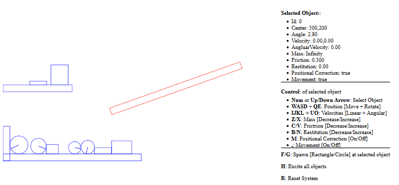

<br>I read the pdf and managed to summarize it in <a href="https://twitter.com/MaximeEuziere/status/1042748849725616128">9 handwritten pages on a tiny notepad</a>.

<br><a href="images/js1k19/2.png"></a>

<br>The more I understood the subject, the more I realized that the book contained a lot of typos, mistakes, contradictions, bad practices, and that it only scratched the surface, by only explaining the less accurate algorithms with very few details (especially at the end, with friction and restitution parts), while being extremely verbose on other points like setting up the IDE and creating JS files.
<br>But at least, it explained things better than any other tutorial.
<br>Then, I looked at their source code on Github and was shocked with the unnecessary complexity and antipatterns everywhere, plus the lack of useful comments almost everywhere.
<br>I did some stats:

<br><blockquote class="twitter-tweet" data-lang="fr"><p lang="en" dir="ltr">Mini JS 2D physics engine, continued!<br><br>So I read this nice book: <a href="https://t.co/ukEUQBplhG">https://t.co/ukEUQBplhG</a><br>and analyzed the book&#39;s demo: <a href="https://t.co/jUjnveVOZH">https://t.co/jUjnveVOZH</a><br><br>This 2D engine represents:<br>- 1162 lines of code<br>- 39kb of code<br>- 11.7kb minified<br>- 3.4kb zipped<br><a href="https://twitter.com/hashtag/screenshotsaturday?src=hash&amp;ref_src=twsrc%5Etfw">#screenshotsaturday</a> <a href="https://twitter.com/hashtag/js13k?src=hash&amp;ref_src=twsrc%5Etfw">#js13k</a> <a href="https://twitter.com/hashtag/wip?src=hash&amp;ref_src=twsrc%5Etfw">#wip</a> <a href="https://t.co/f3UZVX6sRY">pic.twitter.com/f3UZVX6sRY</a></p>&mdash; xem (@MaximeEuziere) <a href="https://twitter.com/MaximeEuziere/status/1083854217826238467?ref_src=twsrc%5Etfw">11 janvier 2019</a></blockquote>
<script async src="https://platform.twitter.com/widgets.js" charset="utf-8"></script>

<br>After <a href="//xem.github.io/articles/#codegolfctober18">Codegolfctober 2018</a> where we golfed a 2D vector library in 264 bytes (or 236 bytes RegPacked)...

<pre class="code">
V=(x,y)=>({x,y})            // vec2(x,y)
l=v=>d(v,v)**.5             // length(v)
a=(v,w)=>V(v.x+w.x,v.y+w.y) // add(v,w)
s=(v,w)=>a(v,m(w,-1))       // sub(v,w)
m=(v,n)=>V(v.x*n,v.y*n)     // mul(v,n)
t=(v,w)=>l(s(v,w))          // dist(v,w)
d=(v,w)=>v.x*w.x+v.y*w.y    // dotproduct(v,w)
c=(v,w)=>v.x*w.y-v.y*w.x    // crossproduct(v,w)
r=(v,o,t)=>a(o,V(c(f=s(v,o),g=V(Math.sin(t),Math.cos(t))),d(f,g))) // rotate(v,origin,theta)
n=v=>m(v,1/(l(v)||1))       // normalize(v)</pre>

<br>...I decided to take their code and remove every line that could be removed, and clean up/comment/golf every line that remained
<br>The demo is <a href="https://xem.github.io/mini2Dphysics/">HERE</a>, the commented source code is <a href="https://github.com/xem/mini2Dphysics/blob/gh-pages/index.html">HERE</a> and the minified code is <a href="https://github.com/xem/mini2Dphysics/blob/gh-pages/index.min.js">HERE</a>.

<br><blockquote class="twitter-tweet" data-conversation="none" data-lang="fr"><p lang="en" dir="ltr">This code contains tons of useless complexity, like tmp vars used only once, and excessive OOP<br><br>I rewrote it clean, while preserving all the physics features:<a href="https://t.co/9QeyY3vekV">https://t.co/9QeyY3vekV</a><br><br>- 518 lines of code<br>- 15.6kb<br>- 4.13kb minified<br>- 1.97kb zipped!<a href="https://twitter.com/hashtag/screenshotsaturday?src=hash&amp;ref_src=twsrc%5Etfw">#screenshotsaturday</a> <a href="https://twitter.com/hashtag/js13k?src=hash&amp;ref_src=twsrc%5Etfw">#js13k</a> <a href="https://twitter.com/hashtag/wip?src=hash&amp;ref_src=twsrc%5Etfw">#wip</a> <a href="https://t.co/l7Q2iRGvEI">pic.twitter.com/l7Q2iRGvEI</a></p>&mdash; xem (@MaximeEuziere) <a href="https://twitter.com/MaximeEuziere/status/1083854220233764869?ref_src=twsrc%5Etfw">11 janvier 2019</a></blockquote>
<script async src="https://platform.twitter.com/widgets.js" charset="utf-8"></script>

<blockquote class="twitter-tweet" data-conversation="none" data-lang="fr"><p lang="en" dir="ltr">New mini 2D physics engine update:<br>Minified: 2.69kb<br>Zipped: 1.45kb!<br><br>Demo: <a href="https://t.co/9QeyY3vekV">https://t.co/9QeyY3vekV</a><a href="https://twitter.com/hashtag/screenshotsaturday?src=hash&amp;ref_src=twsrc%5Etfw">#screenshotsaturday</a>+1 <a href="https://twitter.com/hashtag/js13k?src=hash&amp;ref_src=twsrc%5Etfw">#js13k</a> <a href="https://twitter.com/hashtag/wip?src=hash&amp;ref_src=twsrc%5Etfw">#wip</a> <a href="https://t.co/NCeRWFyMHL">pic.twitter.com/NCeRWFyMHL</a></p>&mdash; xem (@MaximeEuziere) <a href="https://twitter.com/MaximeEuziere/status/1084389400967086080?ref_src=twsrc%5Etfw">13 janvier 2019</a></blockquote>
<script async src="https://platform.twitter.com/widgets.js" charset="utf-8"></script>

<li>Then, came the time to start working on a js1k entry. Obviously, a 2D lib that fits in 1.45kb zipped can't fit in a 1kb demo, it needed to be reduced.
<br>After many attempts, I realized that the rectangles had to be removed, so my goal would be a circle-only entry.
<br>I trimmed every line of code that was related to rectangles, and the minified code reached about 2kb.
<br>I simplified many aspects of the simulation, like giving every circle the same restitution (bounciness) and friction: 0.5; or using the same (random) value for radius, mass and inertia.
<br>I removed every test that is normally used to optimize the simulation, like testing if the bounding circles intersect and if the shapes move towards each other before computing their collision and updating the scene in consequence.
<br>Finally, I removed an "important" loop that made the collision-solving algorithm run 15 times at every frame in order to ensure that no shapes are still intersecting when the scene is drawn.
<br>Instead, I replaced the loops that consider every pair of circles once:
<pre class=code>for(k = 15; k--;){
  for(i = objects.length; i--;){
    for(j = objects.length; j-- > i;){
      ...
    }
  }
}</pre>
<br>With loops that consider every pair twice:
<pre class=code>for(i = objects.length; i--;){
  for(j = objects.length; j--;){
    ...
  }
}</pre>
<br>This allowed to enhance the simulation precision (as if it was run twice at each frame) and save bytes at the same time.
<li>Speaking of loops, when the code contained <pre class="code inline">j-- > i</pre>, I noticed that <a href="https://xem.github.io/terser-online/">Terser</a> minified it as <pre class="code inline">j-- >i</pre> while <pre class="code inline">j-->i</pre> would have been perfectly valid, even though it can be interpreted as an end of HTML comment in some weird situations.
<br>I also noticed that no matter how many "top-level" options I enabled, Terser didn't want to rewrite any global variable as one char.
<br>So I added a bunch of tricks in my <a href="https://xem.github.io/terser-online/">online Terser minifier</a> to fix these cases if the "js1k" option is checked:
<br><blockquote class="twitter-tweet" data-lang="fr"><p lang="en" dir="ltr">Terser-online (<a href="https://twitter.com/hashtag/ES6?src=hash&amp;ref_src=twsrc%5Etfw">#ES6</a> minifier) update!<a href="https://t.co/srj6BBtZmF">https://t.co/srj6BBtZmF</a><br><br>- Extra compression can now be toggled with a checkbox<br>- Output size and RegPack options are placed below the output<br><br>Here&#39;s a 4.6kb app minified in 1800b, then 1434b extra minified, then packed in 1023b<a href="https://twitter.com/hashtag/js1k?src=hash&amp;ref_src=twsrc%5Etfw">#js1k</a> <a href="https://twitter.com/hashtag/js13k?src=hash&amp;ref_src=twsrc%5Etfw">#js13k</a> <a href="https://t.co/NBv4UhuA5O">pic.twitter.com/NBv4UhuA5O</a></p>&mdash; xem ??? (@MaximeEuziere) <a href="https://twitter.com/MaximeEuziere/status/1079761862609260544?ref_src=twsrc%5Etfw">31 d?cembre 2018</a></blockquote>
<script async src="https://platform.twitter.com/widgets.js" charset="utf-8"></script>

<blockquote class="twitter-tweet" data-conversation="none" data-lang="fr"><p lang="en" dir="ltr">FYI, extra minification (on top of Terser&#39;s strongest compression) includes:<br>- Renaming global vars names as 1 char (they need to be declared with &quot;var&quot; though)<br>- Remove the space in &quot;i-- &gt;j&quot;<br>- Remove leading &quot;var&quot; &amp; trailing semicolon<br>(remaining &quot;var&quot;s must be cleaned manually) <a href="https://t.co/5pgRbYK6Hw">pic.twitter.com/5pgRbYK6Hw</a></p>&mdash; xem ??? (@MaximeEuziere) <a href="https://twitter.com/MaximeEuziere/status/1079766556249333760?ref_src=twsrc%5Etfw">31 d?cembre 2018</a></blockquote>
<script async src="https://platform.twitter.com/widgets.js" charset="utf-8"></script>
<li>When I tried to pack this "big" demo, RegPack was crashing, which lead to <a href="https://github.com/Siorki/RegPack/issues/94">this bugfix</a>. 
<li>After managing to golf it below 950 bytes, I decided to use circular emoji (faces) instead of circles. Of course, it didn't work as planned. I used trial-and-error to determine the right font-size and X/Y offsets to make an emoji <a href="https://github.com/xem/js1k19/blob/gh-pages/emojysics/index.html#L240">appear exactly where a circle would have been drawn</a>.
<li>On Apple devices, the rotated emoji were too buggy, so with the help of Twitter I found <a href="https://github.com/xem/js1k19/blob/gh-pages/emojysics/index.html#L236-L237">a tiny test</a> (<pre class="code inline">navigator.userAgent.match("Ma")</pre>) that allowed me to detect them and fallback to regular circles.
<li>The emoji (picked randomly) are in the range U+1F600 - U+1F644 (😀😁😂😃😄😅😆😇😈😉😊😋😌😍😎😏😐😑😒😓😔😕😖😗😘😙😚😛😜😝😞😟😠😡😢😣😤😥😦😧😨😩😪😫😬😭😮😯😰😱😲😳😴😵😶😷😸😹😺😻😼😽😾😿🙀🙁🙂🙃🙄)
</ul>
</details>

<br><hr><br>

<h3>2) SMB 1-1k</h3>

<ul>
<li>Demo: <a href="https://js1k.com/2019-x/demo/4037">HERE</a>
<li>Commented source code: <a href="https://github.com/xem/js1k19/blob/gh-pages/SMB1-1k/index.html">HERE</a>
<li>Minified source code: <a href="https://github.com/xem/js1k19/blob/gh-pages/SMB1-1k/index.min.html">HERE</a>
</ul>

<p>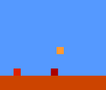

<details>

<summary><b>Tricks and anecdotes</b></summary>
<ul>

<li>This demo is a "challenge accepted" from Twitter!
<br><blockquote class="twitter-tweet" data-lang="fr"><p lang="en" dir="ltr">So, it&#39;s surprisingly hard to make a platformer in 1kb of JavaScript. Here&#39;s my best effort <a href="https://t.co/3ba7x99fLb">https://t.co/3ba7x99fLb</a><a href="https://twitter.com/hashtag/js1k?src=hash&amp;ref_src=twsrc%5Etfw">#js1k</a> <a href="https://twitter.com/hashtag/wastingmylife?src=hash&amp;ref_src=twsrc%5Etfw">#wastingmylife</a> <a href="https://t.co/ZqFMtNLC20">pic.twitter.com/ZqFMtNLC20</a></p>&mdash; Chris Glover (@mad_maw) <a href="https://twitter.com/mad_maw/status/1060775962185392128?ref_src=twsrc%5Etfw">9 novembre 2018</a></blockquote>
<script async src="https://platform.twitter.com/widgets.js" charset="utf-8"></script>

<blockquote class="twitter-tweet" data-conversation="none" data-lang="fr"><p lang="en" dir="ltr">Challenge accepted!<br>Here&#39;s a quick draft (~700b)<a href="https://t.co/gZaUi4gYST">https://t.co/gZaUi4gYST</a><br>PS: could you allow arrow keys or ZQSD controls? not everyone has QWERTY keyboards ;) <a href="https://t.co/XZTUpBq1XE">pic.twitter.com/XZTUpBq1XE</a></p>&mdash; xem 🔵‏ (@MaximeEuziere) <a href="https://twitter.com/MaximeEuziere/status/1061257995571617792?ref_src=twsrc%5Etfw">10 novembre 2018</a></blockquote>
<script async src="https://platform.twitter.com/widgets.js" charset="utf-8"></script>

<li>When I saw that <b>mad_maw</b> said it was hard to make a platform engine in 1kb, I realized I had never tried golfing one before, so I hacked a little demo in a couple hours.
<br>In about 700 bytes, it had a fixed map, a character that could walk and jump, and collisions in every direction.
<br>After that, I thought it would be fun to add scrolling and destructible blocks and pipes and holes to make a demo that looked a bit like the beginning of Super Mario Bros.
<br>It worked so well that I finally decided to put the entire SMB 1-1 map in the demo, whatever it takes! (Spoiler: it took 1206 bytes)
<br>Here's a <a href="https://codepen.io/xem/pen/RqZjaQ?editors=1000">PLAYABLE DEMO</a>.
<br><blockquote class="twitter-tweet" data-lang="fr"><p lang="en" dir="ltr">New <a href="https://twitter.com/hashtag/js1k?src=hash&amp;ref_src=twsrc%5Etfw">#js1k</a> prototype: SMB 1-1 demake<br>Currently 1206b<br>Includes map, scroll, gravity, question/brick blocks, death pits &amp; flag victory (not working on codepen)<br>Todo: enemies, clouds, mountains, castle, explorable pipe, music, UI?<a href="https://t.co/CRgtBWLur2">https://t.co/CRgtBWLur2</a><a href="https://twitter.com/hashtag/screenshotsunday?src=hash&amp;ref_src=twsrc%5Etfw">#screenshotsunday</a> <a href="https://twitter.com/hashtag/gamedev?src=hash&amp;ref_src=twsrc%5Etfw">#gamedev</a> <a href="https://t.co/j9H1z7cvLF">pic.twitter.com/j9H1z7cvLF</a></p>&mdash; xem 🔵‏ (@MaximeEuziere) <a href="https://twitter.com/MaximeEuziere/status/1063763918756163585?ref_src=twsrc%5Etfw">17 novembre 2018</a></blockquote>
<script async src="https://platform.twitter.com/widgets.js" charset="utf-8"></script>
<li>I used <a href="https://goo.gl/nju6DR">this grid</a> as a guide for the map.

<br>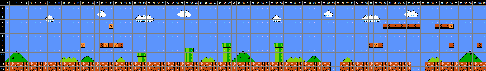
<br>I analyzed this map a lot and realized that there were 3 holes, 6 pipes, 7 stairs (5 to the left, 2 to the right) and interactive blocks scattered on lines 4 and 8.
<br>So I wrote <a href="https://github.com/xem/js1k19/blob/gh-pages/SMB1-1k/index.html#L58-L84">a pipe generator and a stair generator</a>, then <a href="https://github.com/xem/js1k19/blob/gh-pages/SMB1-1k/index.html#L110-L146">placed everything on a 211 x 15px grid</a>.
<br>The way interactive blocks work is interesting, and detailed <a href="https://github.com/xem/js1k19/blob/gh-pages/SMB1-1k/index.html#L94-L102">in the collision function</a>.
<li>After golfing it as hard as I could, and seeing that it would never fit in 1kb, I made a difficult decision: downgrade the graphics of the game.
<br>No more borders, no more bricks, no more arms, legs and cap for Mario, every item of the game had to be reduced to a single pixel instead of a 16x16px block.
<br>As a compensation, having Mario being just one pixel not only saved a lot of bytes in the drawing phase, but also simplified a lot the collisions tests:
<br>Indeed, when everything around him is aligned on a pixel grid, every time I had to test/resolve a collision, I just had to floor or ceil Mario's X or Y coordinates.
<li>Of course, when Mario walks and jumps, his X and Y positions at each frame are computed in subpixels. Same thing for the Gomba enemy at the beginning.
<li>Speaking of the enemy, the collision between Mario and him is tested at every frame using <a href="https://github.com/xem/js1k19/blob/gh-pages/SMB1-1k/index.html#L168">Math.hypot</a>.
<br>If the distance is smaller than 1px, Mario dies if he's on the ground, or kills it if he's in the air.
<br>To save bytes the enemy is not "really" killed, it's just <a href="https://github.com/xem/js1k19/blob/gh-pages/SMB1-1k/index.html#L172">moved at x = -1</a> so we don't see it anymore.
<li>Finally, a lot of manual edits were necessary to make the minified code optimal for RegPack, as explained <a href="https://github.com/xem/js1k19/blob/gh-pages/SMB1-1k/index.html#L312-L318">here</a>.

</ul>

</details>

<br><hr><br>

<h3>3) MiniSynth</h3>

<ul>
<li>Demo: <a href="https://js1k.com/2019-x/demo/4052">HERE</a>
<li>Commented source code: <a href="https://github.com/xem/js1k19/blob/gh-pages/miniSynth/index.html">HERE</a>
<li>Minified source code: <a href="https://github.com/xem/js1k19/blob/gh-pages/miniSynth/index.min.html">HERE</a>
</ul>

<p>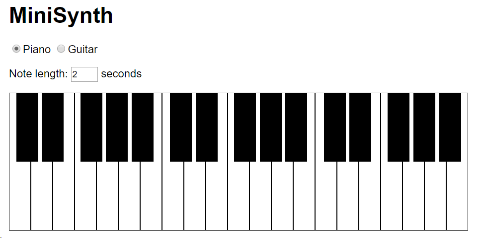

<details>
<summary><b>Tricks and anecdotes</b></summary>
<ul>
<li>I made a lot of sound / music tools for JS13k but wasn't satisfied by how the notes sounded (mostly "beeps"), so I finally started researching how to synthesize notes that actually sounded like real instruments in JS.
<li>Of course, it's a super difficult thing to do, and often requires a lot of code. So I tried to look what solutions already existed.
<li>There's <a href="https://github.com/nicolas-van/sonant-x">Sonant-x</a>, which has a complex UI but outputs songs that can be used in 13kb games.
<br>And there's <a href="https://github.com/keithwhor/audiosynth">audiosynth</a> which produces convincing piano and guitar notes, despite its unreadable source code.
<br>It has a cool <a href="https://keithwhor.com/music/">DEMO</a> though!
<li>I decided to take the complicated source code of audiosynth, and like I did for Emojysics, remove every line of code that wasn't necessary to play a given piano note or a given guitar note, and clean up the remaining lines. The result was impressively small (less than 512 bytes for each synth, instead of 11.3kb for the original lib)
<br><blockquote class="twitter-tweet" data-lang="fr"><p lang="en" dir="ltr">New mini project + <a href="https://twitter.com/hashtag/js1k?src=hash&amp;ref_src=twsrc%5Etfw">#js1k</a> entry + <a href="https://twitter.com/hashtag/js13k?src=hash&amp;ref_src=twsrc%5Etfw">#js13k</a> tool!<a href="https://t.co/MKkz5lWKZn">https://t.co/MKkz5lWKZn</a><br><br>   A piano synth function in less than 512b<br>+ a piano UI in less than 512b<br>= a 993b piano toy, inspired by <a href="https://t.co/FHq10NF7dT">https://t.co/FHq10NF7dT</a><br><br>Thanks to <a href="https://twitter.com/kchplr?ref_src=twsrc%5Etfw">@kchplr</a> @ryanmalm <a href="https://twitter.com/p01?ref_src=twsrc%5Etfw">@p01</a> <a href="https://twitter.com/innovati?ref_src=twsrc%5Etfw">@innovati</a> <a href="https://twitter.com/d_nghia?ref_src=twsrc%5Etfw">@d_nghia</a> !<a href="https://twitter.com/hashtag/screenshotsaturday?src=hash&amp;ref_src=twsrc%5Etfw">#screenshotsaturday</a> <a href="https://t.co/U221GBnArm">pic.twitter.com/U221GBnArm</a></p>&mdash; xem 🔵‏ (@MaximeEuziere) <a href="https://twitter.com/MaximeEuziere/status/1071490262772404224?ref_src=twsrc%5Etfw">8 décembre 2018</a></blockquote>
<script async src="https://platform.twitter.com/widgets.js" charset="utf-8"></script>
<blockquote class="twitter-tweet" data-lang="fr"><p lang="en" dir="ltr">Golfed MiniPiano note generator/player from 503 to 422 bytes.<br>Demo: <a href="https://t.co/ghB8ZrCRPV">https://t.co/ghB8ZrCRPV</a><br><br>Added MiniGuitar (also inspired by audiosynth.js), golfed in 483b!<br>Demo: <a href="https://t.co/FqpOfEXwxY">https://t.co/FqpOfEXwxY</a><br><br>Let&#39;s put them both in 1kb!<a href="https://twitter.com/hashtag/js1k?src=hash&amp;ref_src=twsrc%5Etfw">#js1k</a> <a href="https://twitter.com/hashtag/js13kgames?src=hash&amp;ref_src=twsrc%5Etfw">#js13kgames</a> <a href="https://t.co/IiFVVgccXe">pic.twitter.com/IiFVVgccXe</a></p>&mdash; xem 🔵‏ (@MaximeEuziere) <a href="https://twitter.com/MaximeEuziere/status/1077862878219325440?ref_src=twsrc%5Etfw">26 décembre 2018</a></blockquote>
<script async src="https://platform.twitter.com/widgets.js" charset="utf-8"></script>
<li>So naturally, I thought I could merge the two synths with an unified UI and make a JS1K entry out of it.
<br>It worked pretty well, as <a href="https://twitter.com/MaximeEuziere/status/1077886743775494144">I managed to fit it in 1023b on the first try</a>, and 950b with a lot of extra golfing.
<li>I submitted it to js1k mid-febuary, but no luck: the demo, once published on <a href="//js1k.com/4052">js1k.com/4052</a>, didn't play any sound.
<br>The problem was that js1k's shim didn't like the way I generated and played the notes, and I found no way to fix it...
<br>Then it hit me! With the 74 free bytes I had, I could put all my app inside an iframe, which would bypass completely all the shim's fixes and polyfills that made my app mute.
<br><pre class=code>// Before
n=n=>{...(synth)...},b.innerHTML=`...(ui)...`

// After
b.innerHTML="&lt;iframe width=999 height=999 srcdoc=\"&lt;body id=b>&lt;script>n=n=>{...(synth)...};b.innerHTML=`...(ui)...`&lt;\/script>\">&lt;/iframe>"</pre>
<br>By chance, it worked and fitted exactly in 1024 bytes. We can see the borders of the iframe, but... who cares?
<br>
<blockquote class="twitter-tweet" data-conversation="none" data-lang="fr"><p lang="en" dir="ltr">Hi, sorry if you only see a mute demo! it was supposed to play notes for real.<br>While we fix it, you can test it out of JS1K here:<a href="https://t.co/WtQhVvI2Lv">https://t.co/WtQhVvI2Lv</a><br>Cheers!</p>&mdash; xem 🔵‏ (@MaximeEuziere) <a href="https://twitter.com/MaximeEuziere/status/1095946841710051328?ref_src=twsrc%5Etfw">14 février 2019</a></blockquote>
<script async src="https://platform.twitter.com/widgets.js" charset="utf-8"></script>

<blockquote class="twitter-tweet" data-conversation="none" data-lang="fr"><p lang="en" dir="ltr">Guys, BTW, the MiniSynth demo was updated here, and it now plays sound correctly!<a href="https://t.co/2tvYHbqxwt">https://t.co/2tvYHbqxwt</a></p>&mdash; xem 🔵‏ (@MaximeEuziere) <a href="https://twitter.com/MaximeEuziere/status/1098931818575941632?ref_src=twsrc%5Etfw">22 février 2019</a></blockquote>
<script async src="https://platform.twitter.com/widgets.js" charset="utf-8"></script>

<li>As for the piano and guitar synthesizing itself, the most interesting part of the app in a way, I can't tell much about it because I still see it as black magic... though, I described it the best I could in the commented source code.
<br>As far as I can tell, the piano is simulated by an addition of different frequencies with lower and lower volumes for each "sub-frequency", and the guitar is simulated by accumulating a random noise in a variable after each sample generation and using this variable in the computation of the next sample.
<br>Also, to have a more natural feeling, each note is made of two phases: the attack (where the volume goes steadily from 0 to 1) and the decay (where the volume decreases while being multiplied by <a href="https://github.com/xem/js1k19/blob/gh-pages/miniSynth/index.html#L76-L81">a log-ish operation</a>.
</ul>
</details>

<br><hr><br>

<h3>4) PERIOD1K 2019</h3>

<ul>
<li>Demo: <a href="https://js1k.com/2019-x/demo/4062">HERE</a>
<li>Commented source code: <a href="https://github.com/xem/js1k19/blob/gh-pages/period1k%202019/index.html">HERE</a>
<li>Minified source code: <a href="https://github.com/xem/js1k19/blob/gh-pages/period1k%202019/index.min.html">HERE</a>
</ul>

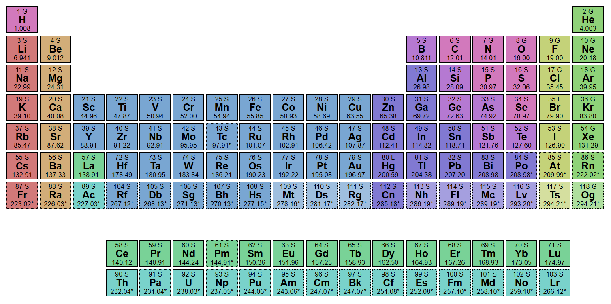
<details>
<summary><b>Tricks and anecdotes</b></summary>
<ul>
<li>I've had a long affective codegolf story with the periodic table of chemical elements:
<br>In 2016 <a href="http://codegolf.github.io/period1k/final.min.pack.html">I made an entry inspired by the theme "EleMental"</a>, on a canvas, with the great help of <b>Subzey</b> and <b>Innovati</b>.
<br>In 2017, <a href="http://codegolf.github.io/period1k/js1k17.html">I rebooted it in HTML</a>, which saved enough bytes to include extra information like the final names of the elements 113 to 118 (that were voted in november 2016) and the state of every element at room temperature.
<br>Just after that, I dweeted a periodic table in 138 bytes <a href="https://www.dwitter.net/d/646">HERE</a> (only containing the shape of the table and colors going from green to blue).
<br>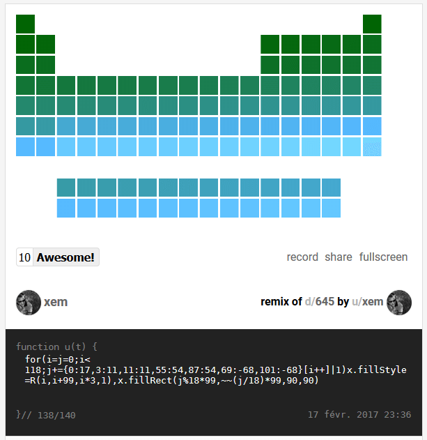
<br>I even produced <a href="http://codegolf.github.io/period1k/wallpaper.png">a wallpaper</a> and <a href="https://twitter.com/MaximeEuziere/status/745312281018376193">a business card</a> for fun.
<li>When JS1K 2019 started, I remembered the Aufbau function that Subzey had made on 140byt.es (showing the electron configuration of any element) and golfed it in 108 bytes, hoping that I could include its outout in a new version of PERIOD1K.
<br><blockquote class="twitter-tweet" data-lang="fr"><p lang="en" dir="ltr">Reduced <a href="https://twitter.com/subzey?ref_src=twsrc%5Etfw">@subzey</a>&#39;s Aufbau from 120 to 108 bytes... <br>(source: <a href="https://t.co/NbEieZldv6">https://t.co/NbEieZldv6</a>)<br><br>aufbau=(a,b,c,d,e)=&gt;{for(c=b=&quot;&quot;;a;)for(d=++c&gt;&gt;1;d--&amp;&amp;a;b+=c+~d+&quot;spdf&quot;[d]+e)a-=e=d*4+2&lt;a?d*4+2:a,b+=b&amp;&amp;&quot; &quot;;return b}<br><br>might use it later :p</p>&mdash; xem 🔵‏ (@MaximeEuziere) <a href="https://twitter.com/MaximeEuziere/status/1085075726066421760?ref_src=twsrc%5Etfw">15 janvier 2019</a></blockquote>
<script async src="https://platform.twitter.com/widgets.js" charset="utf-8"></script>
<br>Unfortunately, this function outputted the entire electron configuration, which is a super long string, and doesn't fit in a little cell.
<br>For example, Aufbau(118) = "1s2 2s2 2p6 3s2 3p6 4s2 3d10 4p6 5s2 4d10 5p6 6s2 4f14 5d10 6p6 7s2 5f14 6d10 7p6".
<br>Some <a href="http://httpsecumania.org/wp-content/uploads/2019/01/modern-periodic-table-with-atomic-mass-and-atomic-number-hd-archives-refrence-inspiration-periodic-table-with-atomic-mass-in-hd-ibcltd-new-periodic-table-x-ray-energies-archives-secumania-ne.png">periodic tables</a> show this information by replacing the longest possible prefix with a previous element.
<br>For example, Aufbau(118) can be written as "[Rn] 7s2 5f14 6d10 7p6"
<br>Unfortunately, this would have taken too many bytes to implement for js1k, so I abandoned it and found two other pieces of information that could be added in my table pretty easily: the element's natural occurrence (primordial / from decay / synthetic), and if the element's type has been observed yet.
<li>To fit these new details, I sacrificed a couple cosmetic details (the black background and the text-shadows) and golfed the HTML and the CSS even more than it already was!
<br><pre class=code>// CSS before:
padding:.7vw .5vw

// CSS after (vw can be replaced by % in many cases, and the space can be removed):
padding:.7%.5%</pre>
<li>The result is a table with 10 (X) different pieces of informations for each element, which is pretty much in the theme... right? ^^
<li>NB: I also "fixed" the type of some elements that was wrong or debatable in the previous editions.
</ul>
</details>

<br><hr><br>
<h3>5) Peach1Kastle</h3>

<ul>
<li>Demo: <a href="https://js1k.com/2019-x/demo/4066">HERE</a>
<li>Commented source code: <a href="https://github.com/xem/js1k19/blob/gh-pages/peach1Kastle/index.html">HERE</a>
<li>Minified source code: <a href="https://github.com/xem/js1k19/blob/gh-pages/peach1Kastle/index.min.html">HERE</a>
</ul>


<details>
<summary><b>Tricks and anecdotes</b></summary>
<ul>
<li>This is the earliest demo I started, back in summer 2018, but the idea is even older:
<br>for many years I dreamed of a "Mario 64"-esque Peach castle, as detailed as possible, in 1kb.
<br>After js13kgames, I met <b>Calada2</b> who made <a href="https://twitter.com/js13kGames/status/1040380749151649792">a CSS3D dino runner game</a>, and discussed with him and <b>Keith Clark</b> (my CSS3D master) about my project. They were super enthusiast and helpful!
<br>I first drew a quick sketch of my 3D scene, viewed from above and from the front side: 
<br>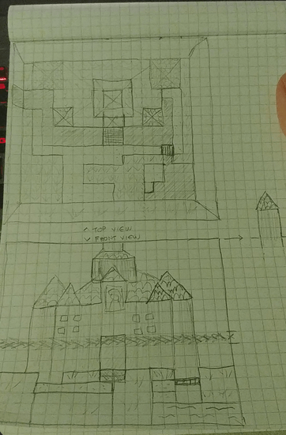
<br>It was pretty clear that the scene will be made of (more or less deformed) CSS3D cubes and pyramids.
<br>I made a quick test to see if CSS3D supported transparent water and deformed pyramids (using scaleX, scaleY and scaleZ).
<br>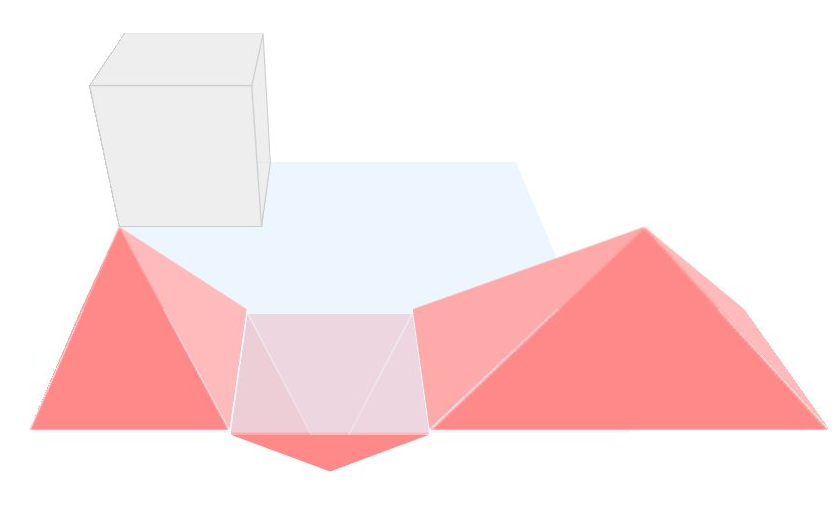
<br>It worked nice, but only if the scene wasn't responsive. (if the pyramids divs were sized in "vw", they would have been too buggy on resize).
<li>So I started implementing the scene, without all the castle floors and roofs, to have a rough idea of the look and the size of the demo.
<br>It looked like that and weighed 3.5kb minified (950 bytes packed).
<br>Note the transparent water and the hills (represented by a big inverted green pyramid) that are not present in the final entry.
<br>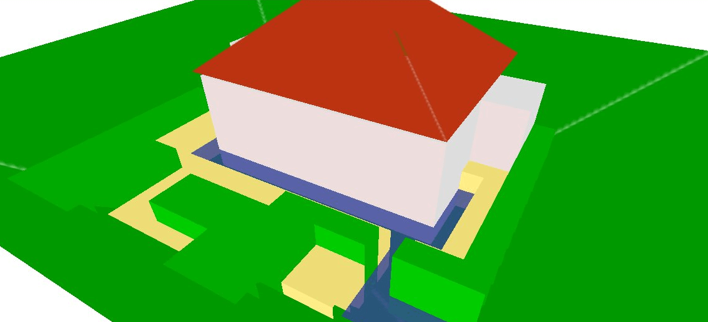
<br>Keith Clark gave himself the challenge to implement his <a href="https://keithclark.co.uk/labs/css-3d-shadows/">realistic shadows</a> in the scene:
<br>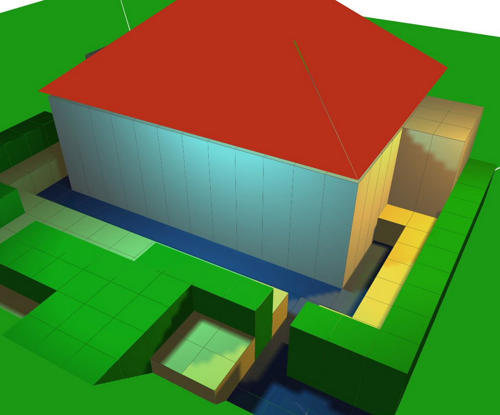
<br>It looked great but, sadly, wasn't really doable under 1kb.
<li>At least, Keith gave me a great tip to produce the pyramids triangles with clip-path instead of borders:
<pre class=code><b>// Before</b>
border-left:2em solid transparent;border-right:2em solid transparent;border-bottom:2em solid #090

<b>// Keith's suggestion (-18b)</b>
height:4em;width:4em;clip-path:polygon(50% 0%,0 100%,100% 100%);background:#090

<b>// Final code (-22b)</b>
height:4em;width:4em;clip-path:polygon(2em+0,0+4em,4em+4em);background:#090</pre>
<li>I continued improving what I had, especially by adjusting every block's height and adjusting every div to fill every gap I found in the cubes and the pyramids.
<br>Also, I made all the cubes overlap on their neighbours (using "transform:scale(1.1)") to avoid seeing a "grid" on the floor.
<br>Then, I lightened the scene as much as I could, by removing invisible faces in the cubes and the pyramids, and using a single div for the water. Here's the castle seen from behind, showing that the castle is hollow and all the cubes are missing their back and bottom faces:
<br>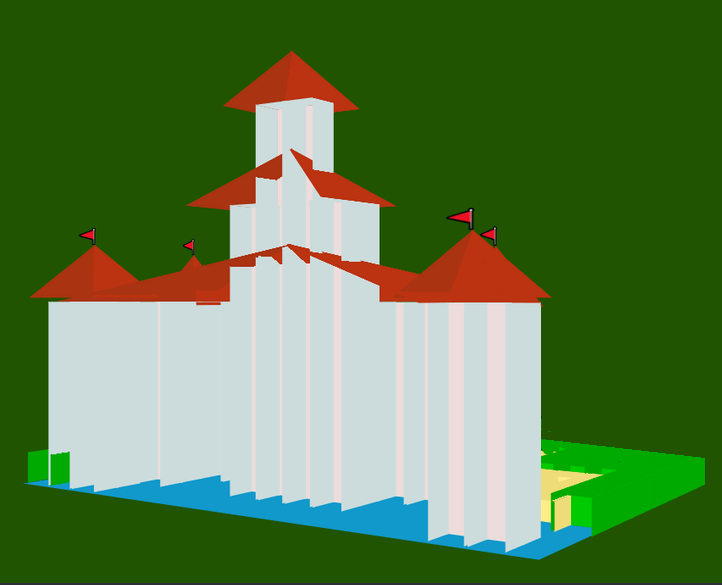
<br>Finally, I simulated natural lighting by coloring the right faces of my cubes and pyramids with a darker color, and added a triangle containing a princess face emoji (👸) on the castle's front wall, to hide this hole above the castle's entrance:
<br>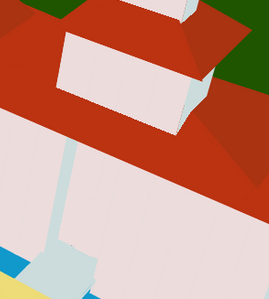
<li>After adding a camera rotation and a lot of tweaking, golfing, and RegPack optimizations, I reached this result (2.8kb minified, 1025b packed), that I teased at the end of <a href="https://twitter.com/MaximeEuziere/status/1057689364111781888">#codegolfctober 2018</a>:
<br>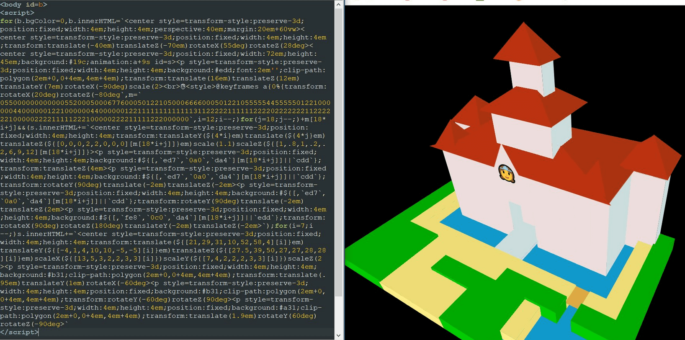
<li>Weeks pass, and I find more and more tricks to save bytes, down to 964 bytes with the same graphics as before.
<br>(Most bytes were saved by organizing the CSS code in a more RegPack-friendly way and merging my render loops into a single one.)
<li>I decided to use the remaining bytes to add a colored background, and other emoji in the scene.
<br>Unfortunately, we're in 2019 and there are still no "window" emoji to represent the castle's windows, so I abandoned them and went with a door (🚪) in the entrance, trees (🌳) on every 7th grass block, and flags (🚩) on the four lower roofs.
<li>for the colored background, I first tried setting a green value to "b.bgColor", but out of serendipity, I realized that I could directly set it to "m" (the scene's map), and have it get parsed as a nice green.
<li>The entry is optimized for Windows because Macs and Linux computers (and browsers) have a much worse CSS3D support. Here's how the demo looks on Linux for example:
<br>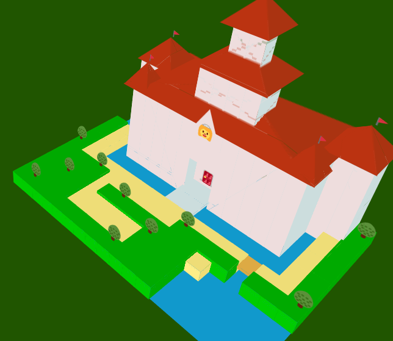
<li>Also, I'd like to thank <b>p01</b> (Mathieu Henri) and <b>Roman Cortes</b> for their interest in this demo and their suggestions to enhance it, by using a raycasting engine instead of CSS3D.
<br>Raycasting would certainly have allowed more detailed graphics, but it was a bit too complex for me to create such a scene in the form of raycasting equations, it's just above my current abilities... and the emoji would have been much more difficult to render too... Maybe next year?
</ul>
</details>

<br><hr><br>

<h3>6) Mini Unicode Toys & 7) EscApe</h3>

<ul>
<li>Demo: <a href="https://js1k.com/2019-x/demo/4090">HERE</a> and <a href="">HERE</a>
<li>Commented source code: <a href="https://github.com/xem/js1k19/blob/gh-pages/UnicodeToys/index.html">HERE</a> and <a href="https://github.com/xem/js1k19/blob/gh-pages/escape/script.js">HERE</a>
<li>Minified source code: <a href="https://github.com/xem/js1k19/blob/gh-pages/UnicodeToys/index.min.html">HERE</a> and <a href="https://github.com/xem/js1k19/blob/gh-pages/escape/index.min.html">HERE</a>.
</ul>
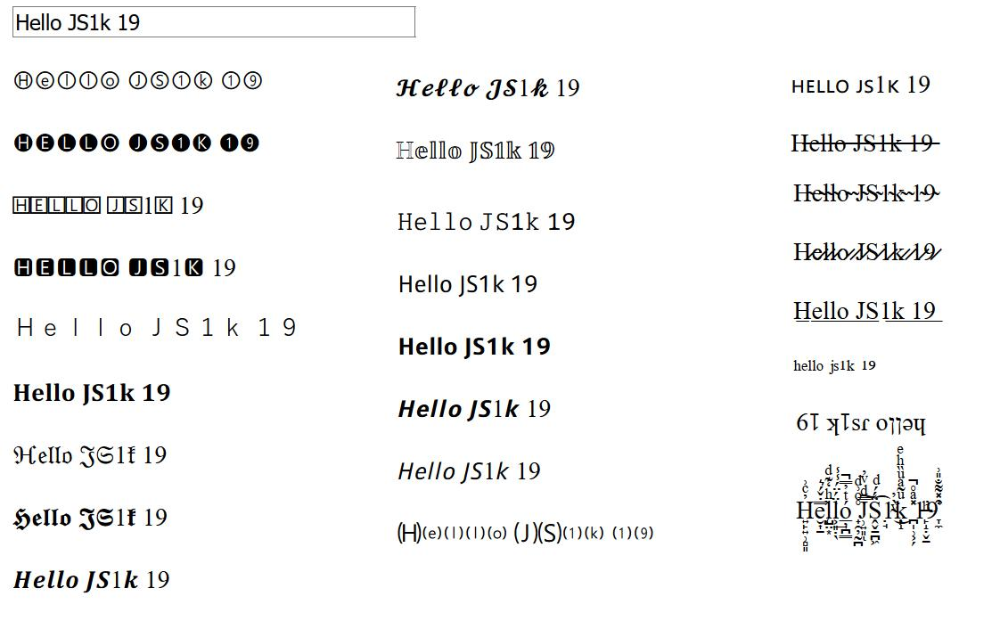
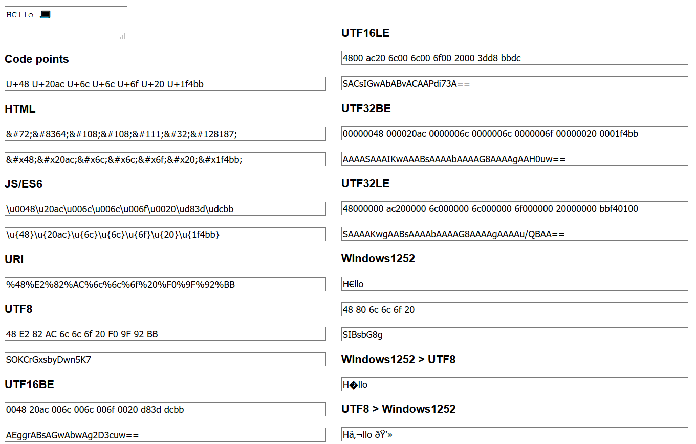

<details>
<summary><b>Tricks and anecdotes</b></summary>
<ul>
<li>My 6th and 7th demos are due to my passion for Unicode and text encodings, and all the things we can do with them.
<br>They were made in a week, from scratch, but highly inspired by existing tools made by me and other devs.
<br>Thanks to <b>Innovati</b> and <b>FakeUnicode</b> for testing and reviewing them.
<li>For Mini Unicode Toys, the hard task was to find a set of 25 transforms that were visually interesting and implementable in 1kb.
<br>I had to abandon many pseudoalphabets (not "natively" present in Unicode, but proposed by <a href="http://qaz.wtf/u/convert.cgi?text=%21%22%23%24%25%26%27%28%29*%2B%2C-.%2F0123456789%3A%3B%3C%3D%3E%3F%40ABCDEFGHIJKLMNOPQRSTUVWXYZ%5B%5C%5D%5E_%60abcdefghijklmnopqrstuvwxyz%7B%7C%7D%7E">qaz.wtf</a>), because they were too incomplete and/or required too many bytes to be declared in an entry's source code.
<br>Here are all the pseudoalphabets present in qaz.wtf, the three I included in this entry are marked in red:
<br>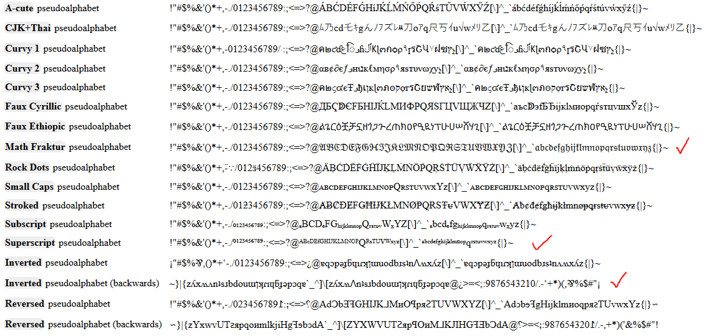
<br>I used <a href="//shapecatcher.com">shapecatcher</a> to complete and fix some pseudoalphabets, in the following way:
<pre class=code><b>// qaz.wtf</b>

Superscript:
ᵃᵇᶜᵈᵉᶠᵍʰⁱʲᵏˡᵐⁿᵒᵖqʳˢᵗᵘᵛʷˣʸᶻ ᴬᴮᶜᴰᴱᶠᴳᴴᴵᴶᴷᴸᴹᴺᴼᴾQᴿˢᵀᵁⱽᵂˣʸᶻ

Reversed:
~}|{zʎxʍʌnʇsɹbdouɯןʞɾıɥƃɟǝpɔqɐ`_^]\[zʎxʍ𐌡nʇsɹbdouɯןʞɾıɥƃɟǝpɔqɐ@¿>=&lt;;:9876543210/.-‘+*)(,⅋%$#"¡

<b>// Mini Unicode toys</b>

Superscript:
ᵃᵇᶜᵈᵉᶠᵍʰⁱʲᵏˡᵐⁿᵒᵖ۹ʳˢᵗᵘᵛʷˣʸᶻ ᵃᵇᶜᵈᵉᶠᵍʰⁱʲᵏˡᵐⁿᵒᵖ۹ʳˢᵗᵘᵛʷˣʸᶻ

reversed:
~{|}zʎxʍʌnʇsɹbdouɯןʞɾᵎɥƃɟǝpɔqɐ`_^[\]zʎxʍʌnʇsɹbdouɯןʞɾᵎɥƃɟǝpɔqɐ@¿&lt;=>⸵:68⏌9S߈εᘔ⥝0/˙-‘+*(),⅋%$#„¡</pre>
(I didn't include uppercase superscript chars, because they were too incomplete: ᴬᴮ*ᴰᴱ*ᴳᴴᴵᴶᴷᴸᴹᴺᴼᴾ*ᴿ*ᵀᵁⱽᵂ***, I reused the lowercase ones instead.)
<li>For every other transform, I studied how it worked, on which Unicode subset it could apply to, and implemented a system that performs it as simply as possible. (see the source code for all the details).
<li>For EscApe, which is a much geeker subject, I unearthed my ungolfed <a href="//xem.github.io/escape">EscApe</a> project that was aiming to give a complete list of transforms and encodings for any kind of text entered in the input textarea, and I kept (and golfed) as many interesting features as I could in 1kb.
<br>In total, I included 21 transforms, and used many very hacky glitches such as:
<br>- using <b>for(i of[...input.value])</b> to loop on all the glyphs (a.k.a UTF-32 BE code points).
<br>- using <b>for(i in input.value)</b> to loop on all the JS chars (a.k.a UTF-16 BE code points).
<br>- using regexes like <b>.replace(/(..)(..)(..)(..) /g, `$4$3$2$1 `)</b> to reorder the hex values of UTF-16 BE and UTF-32 BE transforms into UTF-16 LE and UTF-32 LE transforms.
<br>- using <b>encodeURIComponent</b> and regexes to isolate the UTF-8 bytes of every multi-byte character, directly in their hexadecimal form.
<br>- using <b>XMLHttpRequests</b> to change the encoding of a base64'd text (interpret a latin-1 text in UTF-8 and vice-versa, a.k.a mojibake)
<li>I had some issues when I tried to submit EscApe to js1k:
<br>- First, Chrome 71 had broken the "..." operator back in febuary, so I waited mid-march to submit the demo, hoping that enough people would have at least Chrome 72.
<br>- Then, I realized during the submit process that js1k.com's CSP blocked all XMLHttpRequests, which broke my last two mojibake fields. Fortunately, I managed to replace them with iframes, which worked fine and even took less bytes!
<br><pre class=code><b>// Before (update a field using XHR)</b>

HTML:
&lt;input size=99 id=C>

JS:
with(new XMLHttpRequest){
  open("GET","data:;charset=utf-8;base64,"+latin1_base64,!1),send(),C.value=responseText
}

<b>// After (update an iframe: -41 bytes)</b>

HTML:
&lt;iframe width=600 height=50 id=C>&lt;/iframe>

JS:
C.src="data:;charset=utf-8;base64,"+latin1_base64</pre>
It didn't make my demo lose 2 x 41 bytes due to RegPack, but it saved enough bytes to enhance the UI and labels a little.
<br>- Finally, there was an issue not present in my local shim nor during the submission, but <a href="https://twitter.com/js1k/status/1104802479047364609">present after the demo was published</a>: one of the fields (called "d") stayed empty. Turns out, in published demos only, the global var "d" (a shortcut for "document" that I asked to kuvos to add in the shim a few years ago) couldn't be overwritten. So I renamed it to E and everything went back to normal.
</ul>
</details>

<br><hr><br>

<h3>8) MiniTwo3D</h3>

<ul>
<li>Demo: <a href="https://js1k.com/2019-x/demo/4139">HERE</a>
<li>Commented source code: <a href="https://github.com/xem/js1k19/blob/gh-pages/miniTwo3D/index.html">HERE</a>
<li>Minified source code: <a href="https://github.com/xem/js1k19/blob/gh-pages/miniTwo3D/index.min.html">HERE</a>
</ul>


<details>
<summary><b>Tricks and anecdotes</b></summary>
<ul>
<li>This demo was inspired by a real voxel drawing software called <a href="https://42bytes.itch.io/two3d">Two3D</a>, and developped in two days (one for the code, one for the golf).
<li>Some new CSS tricks were used compared to Peach1Kastle:
<br>- The CSS3D cubes use one less HTML element. In my previous demos, there was a cube container, plus the 4 visible faces (top, left, right, front) popping "up". Now, the container is the top face of the cube, and the 3 other faces pop "down" of it.
<br>
<div style="width: 95%; overflow-x: scroll">
<pre class=code style="width: 1000px"><b>// Before (5 divs)</b>
&lt;div style=transform-style:preserve-3d;position:fixed;width:2em;height:2em;transform:translateY(${2*i}em)translateX(${2*j}em)translateZ(${E+2}em)>
  &lt;div style=transform-style:preserve-3d;position:fixed;width:2em;height:2em;background:${p[i][j]};transform:translateZ(2em)>&lt;/div>
  &lt;div style=transform-style:preserve-3d;position:fixed;width:2em;height:2em;background:${p[i][j]};filter:brightness(90%);transform:rotateY(90deg)translate(-1em)translateZ(-1em)>&lt;/div>
  &lt;div style=transform-style:preserve-3d;position:fixed;width:2em;height:2em;background:${p[i][j]};filter:brightness(80%);transform:rotateY(90deg)translate(-1em)translateZ(1em)>&lt;/div>
  &lt;div style=transform-style:preserve-3d;position:fixed;width:2em;height:2em;background:${p[i][j]};filter:brightness(110%);transform:rotateX(90deg)rotateZ(180deg)translateY(1em)translateZ(-1em)>

<b>// After (4 divs, -111b)</b>
&lt;div style=transform-style:preserve-3d;position:fixed;width:2em;height:2em;background:${p[i][j]};transform:translateY(${2*i}em)translateX(${2*j}em)translateZ(${E+2}em)>
  &lt;div style=transform-style:preserve-3d;position:fixed;width:2em;height:2em;background:${p[i][j]};filter:brightness(90%);transform:rotateY(90deg)translateX(1em)translateZ(-1em)>&lt;/div>
  &lt;div style=transform-style:preserve-3d;position:fixed;width:2em;height:2em;background:${p[i][j]};filter:brightness(80%);transform:rotateY(90deg)translateX(1em)translateZ(1em)>&lt;/div>
  &lt;div style=transform-style:preserve-3d;position:fixed;width:2em;height:2em;background:${p[i][j]};filter:brightness(110%);transform:rotateX(90deg)rotateZ(180deg)translateY(1em)translateZ(-1em)></pre>
</div>
<br>Even with 111 less bytes of code, this enhancement only saves a couple dozen bytes after Regpack compression. It's still nice though.
<br>- The closing parenthesis at the end of the style attributes are not omitted anymore, because RegPack prefers that when we maximize the number of occurrences of the "em)" substring instead of having sometimes "em)" and sometimes "em>".
<br>- The cubes "shadows" are not represented by different colors anymore, a brightness CSS filter is used instead (90% on the left, 80% on the right and 110% on the front. At first I tried setting a brightness to the top face (the cube container), but it somehow broke the CSS3D children and the cube became flat. I guess filters are not compatible with 3D...
<br>- I remarked that the CSS animation (for the 3D scene) had to be applied in the &lt;style> tag that I append to the DOM using <b>document.write</b>. If I try to apply it in the inline style of the scene div, the browser refuses to animate the scene even though everything appears normal in the inspector/debugger.
<li>Peach1Kastle could probably save many bytes by reusing some of these techniques, but I lack free time to re-edit it, there are still two entries to make!
<li>Lara's reaction was funny!
<br><blockquote class="twitter-tweet" data-lang="fr"><p lang="en" dir="ltr">Geez slow down, I haven&#39;t even come up with a single one yet x_x</p>&mdash; Lara Sophie 🏳️‍🌈 (@literallylara) <a href="https://twitter.com/literallylara/status/1105951477116424192?ref_src=twsrc%5Etfw">13 mars 2019</a></blockquote>
<script async src="https://platform.twitter.com/widgets.js" charset="utf-8"></script>
</ul>
</details>

<br><hr><br>

<h3>9) Mini Riding Light</h3>

<ul>
<li>Demo: <a href="https://js1k.com/2019-x/demo/4269">HERE</a>
<li>Commented source code: <a href="https://github.com/xem/js1k19/blob/gh-pages/miniRidingLight/index.html">HERE</a>
<li>Minified source code: <a href="https://github.com/xem/js1k19/blob/gh-pages/miniRidingLight/index.min.html">HERE</a>
</ul>


<details>
<summary><b>Tricks and anecdotes</b></summary>
<ul>
<li>This demo was made in 3 days at the end of the compo, to reach my 10 entries goal.
<br>It is inspired by the video <a href="https://vimeo.com/117815404">Riding Light</a> showing an hypothetical travel from the Sun to Jupiter at the speed of light, assuming that the planets are aligned and the laws of physics allow to travel at this speed and see something.
<br>It's also kind of a sequel of my previous solar system entry <a href="https://js1k.com/2017-magic/demo/2717">If the moon was 1px</a>.
<li>Compared to this entry, Mini Riding Light is animated, in 3D, and has multicolor planets. but it also lacks natural satellites, asteroid belts, and dwarf planets further than Pluto (Haumea, Makemake and Eris).
<li>I didn't draw the rings of Uranus and Neptune because they wouldn't really be visible if we traveled near them, contrary to the rings of Jupiter and Saturn.
<li>I wondered a lot about rendering it in CSS3D or on a canvas, and canvas would probably have allowed a shorter code, but implementing the 3D and the gradients and the shadows in CSS3D was much quicker and straightforward.
<li>In other terms, there's no new special trick in this demo compared to the other CSS3D ones. I just optimized my original draft for RegPack and it fitted in 970 bytes pretty easily. I used the remaining bytes to add the left menu, and make the camera move a bit more slowly after clicking a menu item, in order to make the planets details a bit more visible, because, at the speed of light, it just goes like... woosh!
</ul>
</details>

<br><hr><br>

<h3>10) Team entry: Mini Mandelbox</h3>

<ul>
<li>Demo: <a href="https://js1k.com/2019-x/demo/4182">HERE</a>
<li>Commented source code: <a href="https://github.com/xem/js1k19/blob/gh-pages/miniMandelbox/index.html">HERE</a>
<li>Minified source code: <a href="https://github.com/xem/js1k19/blob/gh-pages/miniMandelbox/index.min.html#L152-L258">HERE</a>
</ul>


<details>
<summary><b>Tricks and anecdotes</b></summary>
<ul>
<li>The biggest project of this edition!
<br>I've dreamt of coding a Mandelbox for as long as I've known its existence.
<br>It even motivated the projects (and blog posts) <a href="http://xem.github.io/articles/archive.html#webgl_quest">WebGL quest</a> and <a href="http://xem.github.io/articles/archive.html#webgl_quest_2">WebGL quest 2</a>!
<br>Though, even after reading and experimenting the WebGL setup and the WebGL raymarching, I still had close to no idea how to render a Mandelbox.
<br>The <a href="https://fr.wikipedia.org/wiki/Mandelbox">formula on wikipedia looked pretty short</a>, but completely cryptic for me.
<br>So, before abandoning the idea forever, I proposed a team entry to <b>Bàlint Csala</b>, who accepted and fortunately, knew exactly how to proceed!
<br>He found an OpenGL implementation which, after a bit of cleanup, looked like this:
<pre class=code>float map(vec3 pos){
 vec4 p = vec4(pos,1);
 vec4 p0 = p;
 for(int i = 0; i &lt; 9; i++){
   p.xyz = clamp(p.xyz, -1., 1.) * 2. - p.xyz;
   float r2 = dot(p.xyz, p.xyz);
   p *= clamp(max(.25/r2, .25), 0., 1.);
   p = p * (vec4(2.8, 2.8, 2.8, abs(2.8)) / .25) + p0;
 }
 return ((length(p.xyz) - 1.) / p.w - pow(abs(2.8), -9.));
}
void mainImage(out vec4 o, vec2 c){
  vec3 ro = vec3(.275, .25, -5. + iGlobalTime / 10.);
  vec2 uv = c / iResolution.xx - iResolution.xy / iResolution.xx / 2.;
  vec3 rd = normalize(vec3(uv, 1.));
  vec3 p = ro;
  vec3 col = vec3(1);
  for (float i = .0; i &lt; 500.; i++){
    float dist = map(p);
    if (dist &lt; .00001){
      col = vec3(.7 - i / 500.);
      break;
    }
    p += rd * dist;
  }
  o.rgb = col;
}</pre>
<br>And it even worked fine <a href="http://xem.github.io/MiniShadertoy/js1k.html#Ly8gTWFuZGVsYm94IGRpc3RhbmNlIGZ1bmN0aW9uCmZsb2F0IG1hcCh2ZWMzIHBvcyl7dmVjNCBwPXZlYzQocG9zLDEpO3ZlYzQgcDA9cDtmb3IoaW50IGk9MDtpPDk7aSsrKXtwLnh5ej1jbGFtcChwLnh5eiwtMS4sMS4pKjIuLXAueHl6O2Zsb2F0IHIyPWRvdChwLnh5eixwLnh5eik7cCo9Y2xhbXAobWF4KC4yNS9yMiwuMjUpLDAuLDEuKTtwPXAqKHZlYzQoMi44LDIuOCwyLjgsIGFicygyLjgpKS8uMjUpK3AwO31yZXR1cm4obGVuZ3RoKHAueHl6KS0xLikvcC53LXBvdyhhYnMoMi44KSwtOS4pO30KCi8vIFJheXRyYWNlcgp2b2lkIG1haW5JbWFnZShvdXQgdmVjNCBvLHZlYzIgYyl7CiAgCiAgLy8gQWRqdXN0IGNvb3JkaW5hdGVzIHN5c3RlbQogIHZlYzIgdXYgPSBjIC8gaVJlc29sdXRpb24ueHggLSBpUmVzb2x1dGlvbi54eSAvIGlSZXNvbHV0aW9uLnh4IC8gMi47CiAgdmVjMyByZCA9IG5vcm1hbGl6ZSh2ZWMzKHV2LCAxLikpOwoKICAvLyBTdGFydGluZyBwb2ludCBmb3IgdGhlIHJheSAoZXllIHBvc2l0aW9uKQogIHZlYzMgcCA9IHZlYzMoKC0oaU1vdXNlLngpLzIuKS8xMDAuLChpTW91c2UueS8yLikvMTAwLiwgLTE1Lik7CgogIC8vIEl0ZXJhdGlvbnMKICBmbG9hdCBpdCA9IDk5LjsKICAKICAvLyBEZWZhdWx0IGNvbG9yIChibGFjaykKICB2ZWMzIGNvbCA9IHZlYzMoMCk7CiAgCiAgLy8gSXRlcmF0ZSBmb3IgZWFjaCBwaXhlbAogIGZvciAoZmxvYXQgaSA9IC4wOyBpIDwgOTkuOyBpKyspewogICAgCiAgICAvLyBDb21wdXRlIHJlbWFpbmluZyBkaXN0YW5jZSBmcm9tIHJheSB0byBNYW5kZWxib3ggCiAgICBmbG9hdCBkaXN0ID0gbWFwKHApOwoKICAgIC8vIENob29zZSBhIGRpc3RhbmNlIHdoZXJlIHRoZSByYXkgaXMgY2xvc2UgZW5vdWdoCiAgICBpZiAoZGlzdCA8IDEuIC8gaXQpewogICAgICAKICAgICAgLy8gU2V0IGNvbG9yIGFjY29yZGluZyB0byB0aGUgbnVtYmVyIG9mIGl0ZXJhdGlvbnMKICAgICAgY29sID0gdmVjMygxLiAtIGkgLyBpdCk7CgogICAgICAvLyBTdG9wCiAgICAgIGJyZWFrOwogICAgfQoKICAgIC8vIElmIHJheSBpcyBub3QgY2xvc2UgZW5vdWdoOiBhZHZhbmNlIHRoZSByYXkgYWNjb3JkaW5nIHRvIHRoZSByZW1haW5pbmcgZGlzdGFuY2UKICAgIHAgKz0gcmQgKiBkaXN0OwogIH0KCiAgLy8gQ29sb3IgdGhlIHBpeGVsCiAgby5yZ2IgPSBjb2w7Cn0=">in our MiniShadertoy js1k demo</a>! So that was very promising.
<br>
<br>Little did we know that we'd spend most of the two month of the competition working hard on it!
<li>...
<li>...
</ul>
</details>

</div>


<div class=section id=codegolfctober18>
<style>
#codegolfctober18 img { border: 1px solid #000; margin: 5px 0; max-height: 400px; }
</style>

<h2>codegolfctober 2018</h2>
<h3>october 2018</h3>

<br>
<hr>
<br>

<p>Like last year, the codegolf team and I decided to show one codegolf thing a day for the whole month of october!
<p>Most were new, but we also showed our favourite demos from last JS1k, JS13k and Dwitter.

<p>Thanks to <b>Aemkei, ETHprod, Justecorruptio, BalintCsala, Zozuar, Xen_the, Zlprp, Subzey, P01,  Keithclarkcouk, Xaotic, Veubeke, Tomxor, JS1K and Dwitter</b> for contributing to this month's awesomeness!

<h2>Day 1: Nano Unicode Slideshow</h2>

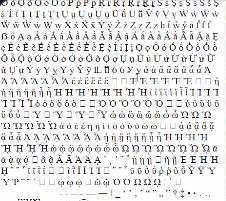

<pre class=code>i=!setInterval(`document.body.innerHTML="&#"+i++`,99) // 53b
i=!setInterval`document.write(" &#"+i++)` // 41b, Webkit only</pre>

<p>We reduced the "nano" demo of <a href="https://github.com/xem/miniUnicode/">MiniUnicode</a> from 54b to 53b / 41b.
<p>The 53b version just changes how i is initialized ("i=!setInterval" instead of "i=0;setInterval")
<p>The 41b version abuses the fact that Webkit allows to call setInterval without second parameter, and to call document.write repeatedly, which makes non-Webkit browsers freeze.

<blockquote class="twitter-tweet" data-lang="fr"><p lang="en" dir="ltr"><a href="https://twitter.com/hashtag/Codegolfctober?src=hash&amp;ref_src=twsrc%5Etfw">#Codegolfctober</a> 2018, day 1: <br><br>&lt;script&gt;<br><br>// Unicode slideshow in 53b: <br>i=!setInterval(`document.body.innerHTML=&quot;&amp;#&quot;+i++`,99)<br><br>// Unicode lister in 41b: (Webkit only)<br>i=!setInterval`document.write(&quot; &amp;#&quot;+i++)`<br><br>&lt;/script&gt;<a href="https://twitter.com/hashtag/JS?src=hash&amp;ref_src=twsrc%5Etfw">#JS</a> <a href="https://t.co/9q0UBW6U4B">pic.twitter.com/9q0UBW6U4B</a></p>&mdash; xem 🔵‏ (@MaximeEuziere) <a href="https://twitter.com/MaximeEuziere/status/1046867078777573382?ref_src=twsrc%5Etfw">1 octobre 2018</a></blockquote>

<br>
<br>
<hr>
<br>

<h2>Day 2: ASCII Game of Life</h2>

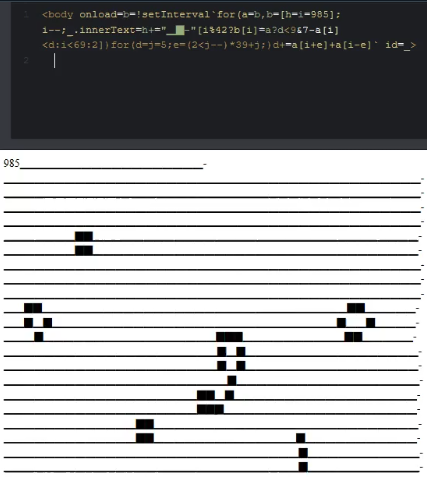

<pre class=code>&lt;body onload=b=!setInterval`for(a=b,b=[h=i=985];i--;_.innerText=h+="▁▉-"[i%42?b[i]=a?d&lt;9&7-a[i]&lt;d:i&lt;69:2])for(d=j=5;e=(2&lt;j--)*39+j;)d+=a[i+e]+a[i-e]` id=_></pre>
<p>We reduced an old Game of Life drawn in ASCII down to 165 then 159b.
<p>The bytes saved come from a new way to compute the state of a cell based on the number of alive neighbours.

<blockquote class="twitter-tweet" data-conversation="none" data-lang="fr"><p lang="en" dir="ltr"><a href="https://twitter.com/hashtag/Codegolfctober?src=hash&amp;ref_src=twsrc%5Etfw">#Codegolfctober</a> day 2<br><br>165b ASCII Game of Life by <a href="https://twitter.com/aemkei?ref_src=twsrc%5Etfw">@aemkei</a><a href="https://t.co/pohkq6JFCD">https://t.co/pohkq6JFCD</a><br><br>→159b with <a href="https://twitter.com/ETHprod?ref_src=twsrc%5Etfw">@ETHprod</a> &amp; <a href="https://twitter.com/justecorruptio?ref_src=twsrc%5Etfw">@justecorruptio</a><br><br>&lt;body onload=b=!setInterval`for(a=b,b=[h=i=985];i--;_.innerText=h+=&quot;▁▉-&quot;[i%42?b[i]=a?d&lt;9&amp;7-a[i]&lt;d:i&lt;69:2])for(d=j=5;e=(2&lt;j--)*39+j;)d+=a[i+e]+a[i-e]` id=_&gt; <a href="https://t.co/hwBUhGfzVB">pic.twitter.com/hwBUhGfzVB</a></p>&mdash; xem 🔵‏ (@MaximeEuziere) <a href="https://twitter.com/MaximeEuziere/status/1047211085265362944?ref_src=twsrc%5Etfw">2 octobre 2018</a></blockquote>

<br>
<br>
<hr>
<br>

<h2>Days 3 & 4: mini 2D vector library</h2>

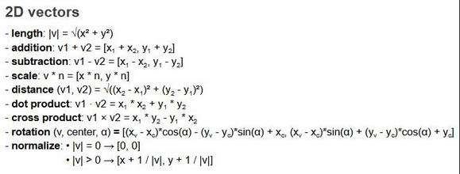

<pre class=code>// API
//- vec2(x,y)
//- length(v)
//- add(v,w)
//- sub(v,w)
//- mul(v,n)
//- dist(v,w)
//- dotproduct(v,w)
//- crossproduct(v,w)
//- rotate(v,origin,theta)
//- normalize(v)

// Not regpacked version (264b)
V=(x,y)=>({x,y})
l=v=>d(v,v)**.5
a=(v,w)=>V(v.x+w.x,v.y+w.y)
s=(v,w)=>a(v,m(w,-1))
m=(v,n)=>V(v.x*n,v.y*n)
t=(v,w)=>l(s(v,w))
d=(v,w)=>v.x*w.x+v.y*w.y
c=(v,w)=>v.x*w.y-v.y*w.x
r=(v,o,t)=>a(o,V(c(f=s(v,o),g=V(Math.sin(t),Math.cos(t))),d(f,g)))
n=v=>m(v,1/(l(v)||1))</pre>

<p>We had fun golfing this lib of 10 functions in 264b, by using functions inside other functions as much as possible to save bytes.
<p>For example, the distance between two vectors is "length(sub(v,w))" instead of Math.sqrt(v.x-w.y, v.y-w.y).
<p>And sub is also reusing add and mul instead of redoing the whole operation.
<p>And length(v) returns the square root of dot(v, v), which corresponds to v.x² + v.y². Etc...
<p>I'm very impressed by the solution they came up with for rotate, but I gave up trying to understand it ^^

<blockquote class="twitter-tweet" data-conversation="none" data-lang="fr"><p lang="en" dir="ltr"><a href="https://twitter.com/hashtag/Codegolfctober?src=hash&amp;ref_src=twsrc%5Etfw">#Codegolfctober</a> day 3<br><br>I&#39;m working on a mini 2D rigid bodies physics library, and started with a full 2D vector toolkit in 264 bytes:<a href="https://t.co/PHS03AjJMR">https://t.co/PHS03AjJMR</a><br><br>Thanks to <a href="https://twitter.com/BalintCsala?ref_src=twsrc%5Etfw">@BalintCsala</a>, <a href="https://twitter.com/justecorruptio?ref_src=twsrc%5Etfw">@justecorruptio</a> &amp; <a href="https://twitter.com/ETHprod?ref_src=twsrc%5Etfw">@ETHprod</a> for their great help!<br><br>(Join our slack room &gt; <a href="https://t.co/zzNoinR00N">https://t.co/zzNoinR00N</a>) <a href="https://t.co/svULT7J59Q">pic.twitter.com/svULT7J59Q</a></p>&mdash; xem 🔵‏ (@MaximeEuziere) <a href="https://twitter.com/MaximeEuziere/status/1047545802669875200?ref_src=twsrc%5Etfw">3 octobre 2018</a></blockquote>

<pre class="code">// Regpackable version (236b regpacked)
v=(x,y,t)=>({x,y});
l=(x,y,t)=>d(x,x)**.5;
a=(x,y,t)=>v(x.x+y.x,x.y+y.y);
s=(x,y,t)=>a(x,m(y,-1));
m=(x,y,t)=>v(x.x*y,x.y*y);
t=(x,y,t)=>l(a(x,m(y,-1)));
d=(x,y,t)=>x.x*y.x+x.y*y.y;
c=(x,y,t)=>x.x*y.y-x.y*y.x;
r=(x,y,t)=>a(y,v(c(a(x,m(y,-1)),v(Math.sin(t),Math.cos(t))),d(a(x,m(y,-1)),v(Math.sin(t),Math.cos(t)))));
n=(x,y,t)=>m(x,1/(l(x)||1));</pre>

<p>The next day, we optimized it to be as compressible by Regpack as possible, by repeating signatures, semicolons, and expanding some factorizations to maximize repetitions. The result fits in 236b.

<blockquote class="twitter-tweet" data-conversation="none" data-lang="fr"><p lang="en" dir="ltr"><a href="https://twitter.com/hashtag/Codegolfctober?src=hash&amp;ref_src=twsrc%5Etfw">#Codegolfctober</a> day 4:<br><br>The same 2D vector lib, optimized for Regpack (335b), then Regpacked (236b)<br><br>Made with <a href="https://twitter.com/BalintCsala?ref_src=twsrc%5Etfw">@BalintCsala</a>, <a href="https://twitter.com/justecorruptio?ref_src=twsrc%5Etfw">@justecorruptio</a> &amp; <a href="https://twitter.com/ETHprod?ref_src=twsrc%5Etfw">@ETHprod</a> &lt;3<a href="https://t.co/lmkIlGiJQ2">https://t.co/lmkIlGiJQ2</a> <a href="https://t.co/EmPvQrWHht">pic.twitter.com/EmPvQrWHht</a></p>&mdash; xem 🔵‏ (@MaximeEuziere) <a href="https://twitter.com/MaximeEuziere/status/1047910681167757314?ref_src=twsrc%5Etfw">4 octobre 2018</a></blockquote>

<br>
<br>
<hr>
<br>

<h2>Day 5: Mini Music Player</h2>

<pre class=code>with(new AudioContext)with(G=createGain())for(i in D=<b>[...Array(26).keys()]</b>)with(createOscillator())if(D[i])connect(G),G.connect(destination),start(i*.2),frequency[v="setValueAtTime"](440*1.06**(13-D[i]),i*.2),gain[v](1,i*.2),gain.setTargetAtTime(.001,i*.2+.18,.005),stop(i*.2+.19)</pre>

<p>A tiny music player, including the output of MiniMusic (golfed during js13kgames <a href="#js13k17">2017</a> and <a href="#js13k18">2018</a> and regolfed here in 262 bytes) combined with the smallest code that generates an array from 1 to N (gorfed during the day 10 of <a href="archive.html#golfctober_2017">golfctober 2017</a>, 20 bytes).
<p>The result is a 280b script playing 2 octaves in decrescendo, while avoiding to make a "click" at the end of each note, that Oscillators do by default when we stop them abruptly.
<p><button onclick='with(new AudioContext)with(G=createGain())for(i in D=[...Array(26).keys()])with(createOscillator())if(D[i])connect(G),G.connect(destination),start(i*.2),frequency[v="setValueAtTime"](440*1.06**(13-D[i]),i*.2),gain[v](1,i*.2),gain.setTargetAtTime(.001,i*.2+.18,.005),stop(i*.2+.19)'>Demo</button>  (warning, the volume is loud by default)

<blockquote class="twitter-tweet" data-conversation="none" data-lang="fr"><p lang="en" dir="ltr"><a href="https://twitter.com/hashtag/Codegolfctober?src=hash&amp;ref_src=twsrc%5Etfw">#Codegolfctober</a> day 5<br><br>A music player in 262b<a href="https://t.co/5oxaEpbcON">https://t.co/5oxaEpbcON</a><br><br>D is a list of notes (here, 0 to 26 = 2 octaves)<br><br>The rest of the code (setValueAtTime, setTargetAtTime) prevents the browser to &quot;click&quot; at the end of each note<br><br>Editor: <a href="https://t.co/KeiphbXzXM">https://t.co/KeiphbXzXM</a><br>Made for <a href="https://twitter.com/hashtag/js13k?src=hash&amp;ref_src=twsrc%5Etfw">#js13k</a></p>&mdash; xem 🔵‏ (@MaximeEuziere) <a href="https://twitter.com/MaximeEuziere/status/1048107509767188480?ref_src=twsrc%5Etfw">5 octobre 2018</a></blockquote>

<br>
<br>
<hr>
<br>

<h2>Day 6: Strange Crystals v0.140b</h2>

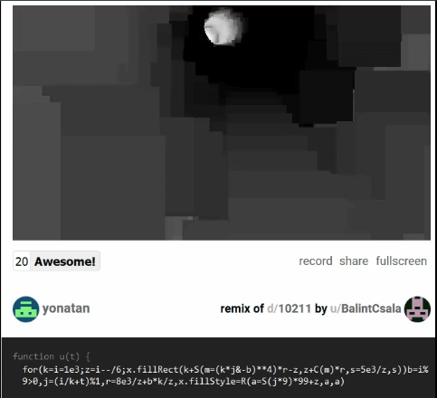

<pre class=code>for(k=i=1e3;z=i--/6;x.fillRect(k+S(m=(k*j&-b)**4)*r-z,z+C(m)*r,s=5e3/z,s))b=i%9>0,j=(i/k+t)%1,r=8e3/z+b*k/z,x.fillStyle=R(a=S(j*9)*99+z,a,a)</pre>

<p>@BalintCsala and @zozuar golfed a 140b demake of <a href="https://js1k.com/2013-spring/demo/1555">Strange Crystals II</a> (winning js1k 2013 entry by @ehouais).
<p>@zozuar wrote an amazing writeup about it <a href="http://zozuar.org/txt/sc/">here</a>.

<blockquote class="twitter-tweet" data-conversation="none" data-lang="fr"><p lang="en" dir="ltr"><a href="https://twitter.com/hashtag/Codegolfctober?src=hash&amp;ref_src=twsrc%5Etfw">#Codegolfctober</a> day 6<br><br>The incredible dweet by <a href="https://twitter.com/BalintCsala?ref_src=twsrc%5Etfw">@BalintCsala</a> &quot;strange crystals v0.140b&quot;, and its complete deconstruction by <a href="https://twitter.com/zozuar?ref_src=twsrc%5Etfw">@zozuar</a> <br><br>Dweet: <a href="https://t.co/wkEGQXJKXo">https://t.co/wkEGQXJKXo</a><br>Writeup: <a href="https://t.co/0d6enkGDuC">https://t.co/0d6enkGDuC</a><br><a href="https://t.co/O2tybjY4eu">pic.twitter.com/O2tybjY4eu</a></p>&mdash; xem 🔵‏ (@MaximeEuziere) <a href="https://twitter.com/MaximeEuziere/status/1048663204782657536?ref_src=twsrc%5Etfw">6 octobre 2018</a></blockquote>

<br>
<br>
<hr>
<br>

<h2>Days 7 & 8 & 11 & 16 & 30: Mini Serpinski</h2>

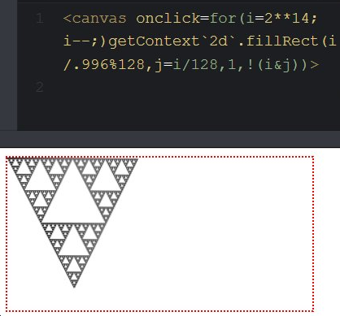

<p>During this month, most of the time on Slask was used to golf mini Serpinski triangles on canvas and in ASCII, straight or lopsided, centered or right-aligned. Here are the different achievements of the team:

<pre class=code>&lt;canvas onclick=for(i=2**14;i--;)getContext`2d`.fillRect(i/.996%128,j=i/128,1,!(i&j))></pre>

<blockquote class="twitter-tweet" data-conversation="none" data-lang="fr"><p lang="en" dir="ltr"><a href="https://twitter.com/hashtag/Codegolfctober?src=hash&amp;ref_src=twsrc%5Etfw">#Codegolfctober</a> day 7<br><br>Our 2017 Mini Serpinski Triangle was regolfed by <a href="https://twitter.com/Xen_the?ref_src=twsrc%5Etfw">@Xen_the</a>, <a href="https://twitter.com/zlprp?ref_src=twsrc%5Etfw">@zlprp</a>  &amp; <a href="https://twitter.com/justecorruptio?ref_src=twsrc%5Etfw">@justecorruptio</a> and was reduced from 118b to 86b!<br><br>&lt;canvas onclick=for(i=2**14;i--;)getContext`2d`.fillRect(i/.996%128,j=i/128,1,!(i&amp;j))&gt;<br><br>Demo (click to start): <a href="https://t.co/U4JtxIG5nH">https://t.co/U4JtxIG5nH</a> <a href="https://t.co/qDlU70GEtR">pic.twitter.com/qDlU70GEtR</a></p>&mdash; xem 🔵‏ (@MaximeEuziere) <a href="https://twitter.com/MaximeEuziere/status/1049028067505721346?ref_src=twsrc%5Etfw">7 octobre 2018</a></blockquote>

<pre class=code>&lt;canvas onclick=for(i=2**14;i--;)getContext`2d`.fillRect(i%128,j=i/128,1,!(i&j))></pre>

<blockquote class="twitter-tweet" data-conversation="none" data-lang="fr"><p lang="en" dir="ltr"><a href="https://twitter.com/hashtag/codegolfctober?src=hash&amp;ref_src=twsrc%5Etfw">#codegolfctober</a> day 8<br><br>Yesterday&#39;s Mini Serpinski Triangle but &quot;lopsided&quot;, made by <a href="https://twitter.com/justecorruptio?ref_src=twsrc%5Etfw">@justecorruptio</a> in 81b.<br><br>&lt;canvas onclick=for(i=2**14;i--;)getContext`2d`.fillRect(i%128,j=i/128,1,!(i&amp;j))&gt;<br><br>Demo: <a href="https://t.co/ZhxxaQqw3c">https://t.co/ZhxxaQqw3c</a> <a href="https://t.co/sn07BxnSbt">pic.twitter.com/sn07BxnSbt</a></p>&mdash; xem 🔵‏ (@MaximeEuziere) <a href="https://twitter.com/MaximeEuziere/status/1049366237992632320?ref_src=twsrc%5Etfw">8 octobre 2018</a></blockquote>

<pre class=code>&lt;svg onload=for(i=4096;i--;)write(i%64?i&i/64&&`_`:`-`)></pre>

<blockquote class="twitter-tweet" data-conversation="none" data-lang="fr"><p lang="en" dir="ltr"><a href="https://twitter.com/hashtag/codegolfctober?src=hash&amp;ref_src=twsrc%5Etfw">#codegolfctober</a> day 11<br><br>56b ASCII Serpinski &quot;right-aligned&quot; by <a href="https://twitter.com/justecorruptio?ref_src=twsrc%5Etfw">@justecorruptio</a>, <a href="https://twitter.com/aemkei?ref_src=twsrc%5Etfw">@aemkei</a> &amp; <a href="https://twitter.com/keithclarkcouk?ref_src=twsrc%5Etfw">@keithclarkcouk</a> <br><br>&lt;svg onload=for(i=4096;i--;)write(i%64?i&amp;i/64&amp;&amp;`_`:`-`)&gt;<br><br>Demo: <a href="https://t.co/Tpuav4tDBh">https://t.co/Tpuav4tDBh</a><br><br>(requires a narrow window to show line breaks at the right places) <a href="https://t.co/i6446e1yFC">pic.twitter.com/i6446e1yFC</a></p>&mdash; xem 🔵‏ (@MaximeEuziere) <a href="https://twitter.com/MaximeEuziere/status/1050489510839156736?ref_src=twsrc%5Etfw">11 octobre 2018</a></blockquote>

<pre class=code>&lt;svg onload=for(i=2e3;i--;)write(i%63?i&i/32&&'_':x)></pre>

<blockquote class="twitter-tweet" data-conversation="none" data-lang="fr"><p lang="en" dir="ltr"><a href="https://twitter.com/hashtag/codegolfctober?src=hash&amp;ref_src=twsrc%5Etfw">#codegolfctober</a> day 16:<br><br>The smallest (and weirdest) ASCII Serpinski Triangle by <a href="https://twitter.com/aemkei?ref_src=twsrc%5Etfw">@aemkei</a>, <a href="https://twitter.com/keithclarkcouk?ref_src=twsrc%5Etfw">@keithclarkcouk</a> and <a href="https://twitter.com/justecorruptio?ref_src=twsrc%5Etfw">@justecorruptio</a> <br><br>53 bytes!<br><br>&lt;svg onload=for(i=2e3;i--;)write(i%63?i&amp;i/32&amp;&amp;&#39;_&#39;:x)&gt;<br><br>Demo: <a href="https://t.co/CKhOt9x9LH">https://t.co/CKhOt9x9LH</a><br>(needs a window &lt; ~1130px) <a href="https://t.co/omAs3KrJqj">pic.twitter.com/omAs3KrJqj</a></p>&mdash; xem 🔵‏ (@MaximeEuziere) <a href="https://twitter.com/MaximeEuziere/status/1052280311541686272?ref_src=twsrc%5Etfw">16 octobre 2018</a></blockquote>

<pre class=code>&lt;canvas onclick=for(i=3e4;i--;)getContext`2d`.fillRect(i%128,j=i/128,1,!(i&j))></pre>

<blockquote class="twitter-tweet" data-conversation="none" data-lang="fr"><p lang="en" dir="ltr"><a href="https://twitter.com/hashtag/codegolfctober?src=hash&amp;ref_src=twsrc%5Etfw">#codegolfctober</a> day 30<a href="https://twitter.com/Xen_the?ref_src=twsrc%5Etfw">@Xen_the</a> reduced the lopsided mini Serpinski triangle (cf. day 8) to 79b!<br><br>&lt;canvas onclick=for(i=3e4;i--;)getContext`2d`.fillRect(i%128,j=i/128,1,!(i&amp;j))&gt;<br><br>Demo: <a href="https://t.co/MQQYE8UPOD">https://t.co/MQQYE8UPOD</a><br>(click canvas to start) <a href="https://t.co/MxA2iiD5BQ">pic.twitter.com/MxA2iiD5BQ</a></p>&mdash; xem 🔵‏ (@MaximeEuziere) <a href="https://twitter.com/MaximeEuziere/status/1057354854836903936?ref_src=twsrc%5Etfw">30 octobre 2018</a></blockquote>

<br>
<br>
<hr>
<br>

<h2>Days 9 & 10 & 12 & 13: MiniCalculator</h2>

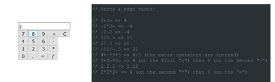

<p>A wild codegolf project appeared on day 9, based on an idea prototyped by @ETHprod: a mini calculator!
<p>During the following week, we golfed it in two different versions: full-featured and minimalist.
<p>It was pretty fun to golf the generation of the UI (input, buttons), while implementing each button's features, while precisely matching the behavior of a real calculator in every possible edge case. Boy, those things are weird, but our code is even weirder!

<pre class=code>// Full-featured calc
&lt;body onload='for(s of"C/=.0 *321 -654 +987 ")i.outerHTML+=s&lt;"!"?"&lt;p>":`&lt;button onclick=F("${s}")>`+s;F=b=>i.value=z=b>"B"?(c=d=o="",a=r=p=0):1+b-0?c+=b-.1?b:d?"":d=b:(q=b&lt;"=",p?r=c:a=c||a,r=q?p&&r:r||a,a=o&&r?z=eval(a+o+s+r):a,o=q?b:o,p=q,d=c="",q?z:a);F`C`'>&lt;input id=i></pre>

<blockquote class="twitter-tweet" data-conversation="none" data-lang="fr"><p lang="en" dir="ltr"><a href="https://twitter.com/hashtag/codegolfctober?src=hash&amp;ref_src=twsrc%5Etfw">#codegolfctober</a> day 9<br><br>A 252b calculator in HTML/JS inspired by <a href="https://twitter.com/ETHprod?ref_src=twsrc%5Etfw">@ETHprod</a> <br><br>Demo: <a href="https://t.co/vhD4kZIP7r">https://t.co/vhD4kZIP7r</a><br><br>I summon <a href="https://twitter.com/Xen_the?ref_src=twsrc%5Etfw">@Xen_the</a> <a href="https://twitter.com/subzey?ref_src=twsrc%5Etfw">@subzey</a> <a href="https://twitter.com/aemkei?ref_src=twsrc%5Etfw">@aemkei</a> <a href="https://twitter.com/p01?ref_src=twsrc%5Etfw">@p01</a> and <a href="https://twitter.com/justecorruptio?ref_src=twsrc%5Etfw">@justecorruptio</a> to bring that below 200b :p <a href="https://t.co/WX03uCfxKP">pic.twitter.com/WX03uCfxKP</a></p>&mdash; xem 🔵‏ (@MaximeEuziere) <a href="https://twitter.com/MaximeEuziere/status/1049749216518639619?ref_src=twsrc%5Etfw">9 octobre 2018</a></blockquote>

<blockquote class="twitter-tweet" data-conversation="none" data-lang="fr"><p lang="en" dir="ltr"><a href="https://twitter.com/hashtag/codegolfctober?src=hash&amp;ref_src=twsrc%5Etfw">#codegolfctober</a> day 10<a href="https://twitter.com/justecorruptio?ref_src=twsrc%5Etfw">@justecorruptio</a>  successfully golfed yesterday&#39;s calculaton in 197b!<br><br>In the meantime, I made a 770b calculator in HTML/JS but this time it supports every weird edge case!<br><br>Demo: <a href="https://t.co/0BpY9ToZWx">https://t.co/0BpY9ToZWx</a><a href="https://twitter.com/Xen_the?ref_src=twsrc%5Etfw">@Xen_the</a> <a href="https://twitter.com/subzey?ref_src=twsrc%5Etfw">@subzey</a> <a href="https://twitter.com/aemkei?ref_src=twsrc%5Etfw">@aemkei</a> <a href="https://twitter.com/p01?ref_src=twsrc%5Etfw">@p01</a>, let&#39;s golf it? <a href="https://t.co/2KF1HS6pT0">pic.twitter.com/2KF1HS6pT0</a></p>&mdash; xem 🔵‏ (@MaximeEuziere) <a href="https://twitter.com/MaximeEuziere/status/1050100703845330950?ref_src=twsrc%5Etfw">10 octobre 2018</a></blockquote>


<blockquote class="twitter-tweet" data-conversation="none" data-lang="fr"><p lang="en" dir="ltr"><a href="https://twitter.com/hashtag/codegolfctober?src=hash&amp;ref_src=twsrc%5Etfw">#codegolfctober</a> day 12<br><br>272b full-featured calculator (the one from day 10, but rewritten and corrected by <a href="https://twitter.com/justecorruptio?ref_src=twsrc%5Etfw">@justecorruptio</a>)<br><br>Source: <a href="https://t.co/UJwhes0tJr">https://t.co/UJwhes0tJr</a><br><br>Demo: <a href="https://t.co/KlYqDay3JO">https://t.co/KlYqDay3JO</a> <a href="https://t.co/DrFn2jbj2A">pic.twitter.com/DrFn2jbj2A</a></p>&mdash; xem 🔵‏ (@MaximeEuziere) <a href="https://twitter.com/MaximeEuziere/status/1050824176351760386?ref_src=twsrc%5Etfw">12 octobre 2018</a></blockquote>

<pre class=code>&lt;input id=i>&lt;script>o='';for(s of"C/=.0!*321!-654 +987!")i.outerHTML+=s&lt;"#"?"&lt;p>":`&lt;button onclick="o=i.value=${s=="="?`eval(o)`:s>"B"?`''`:`o+'${s}'`}">`+s&lt;/script> </pre>

<blockquote class="twitter-tweet" data-conversation="none" data-lang="fr"><p lang="en" dir="ltr"><a href="https://twitter.com/hashtag/codegolfctober?src=hash&amp;ref_src=twsrc%5Etfw">#codegolfctober</a> day 13:<br><br>165b super-basic calculator (HTML+JS)<br><br>Demo: <a href="https://t.co/XDIDI4xd8r">https://t.co/XDIDI4xd8r</a><br><br>Source code:<br><br>&lt;input id=i&gt;&lt;script&gt;o=&#39;&#39;;for(s of&quot;C/=.0!*321!-654 +987!&quot;)i.outerHTML+=s&lt;&quot;#&quot;?&quot;&lt;p&gt;&quot;:`&lt;button onclick=&quot;o=i.value=${s==&quot;=&quot;?`eval(o)`:s&gt;&quot;B&quot;?`&#39;&#39;`:`o+&#39;${s}&#39;`}&quot;&gt;`+s&lt;/script&gt; <a href="https://t.co/MVrGt05Ad4">pic.twitter.com/MVrGt05Ad4</a></p>&mdash; xem 🔵‏ (@MaximeEuziere) <a href="https://twitter.com/MaximeEuziere/status/1051008740407828480?ref_src=twsrc%5Etfw">13 octobre 2018</a></blockquote>

<br>
<br>
<hr>
<br>

<h2>Days 14, 15: MiniSweeper</h2>

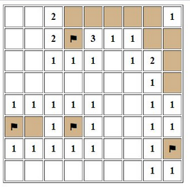

<p>My oldest codegolfed game, made in 497b with Subzey back in 2013, lost 11 bytes after I used ES6 and removed old browsers hacks.

<p><a href="https://t.co/tIzxsVp4Ry">DEMO</a>

<pre class=code>&lt;table border id=t>&lt;script>b=[v=[]];f=[l=g=0];n=[];r=d=>{for(M=!l;M;l=g)for(a=M=H="";s>++a;)for(j=s,H+="&lt;tr>";~--j;H+=`&lt;th width=25 height=30 onclick=b[i=${I}]?g--:v[i]=1;r() oncontextmenu=for(f[${I}]^=g=1,a=0;a&lt;s*s;)g&=b[a]^!f[a++];return!!r() ${(v[I]|g||"bgcolor=tan")}>`+(f[I]?"⚑":b[I]&g?"💣":v[I]|g&&n[I]||""))for(I=a*s+j,T=d?b[I]=.1>Math.random():0,x=2;~x--;)for(y=2;~y--;~B&&B&lt;s?(n[C]=~~n[C]+T)||v[I]|b[I]|!v[C]?0:v[I]=M=1:0)B=j+y,C=(a+x)*s+B;t.innerHTML=H};r(s=9)&lt;/script></pre>

<blockquote class="twitter-tweet" data-conversation="none" data-lang="fr"><p lang="en" dir="ltr"><a href="https://twitter.com/hashtag/codegolfctober?src=hash&amp;ref_src=twsrc%5Etfw">#codegolfctober</a> day 14:<br><br>My first codegolf project, made with <a href="https://twitter.com/subzey?ref_src=twsrc%5Etfw">@subzey</a> back in 2013,<br>rebooted with more ES6 and less IE hacks: 486 bytes!<br>I&#39;m sure we can enhance it.<br><br>Demo: <a href="https://t.co/tIzxsVp4Ry">https://t.co/tIzxsVp4Ry</a><br><br>Commented source code: <a href="https://t.co/zz15sVxxYm">https://t.co/zz15sVxxYm</a> <a href="https://t.co/cA8M0pyEeY">pic.twitter.com/cA8M0pyEeY</a></p>&mdash; xem 🔵‏ (@MaximeEuziere) <a href="https://twitter.com/MaximeEuziere/status/1051376167612280833?ref_src=twsrc%5Etfw">14 octobre 2018</a></blockquote>

<p>Then Aemkei joined the party and brought it down to 349b while converting it to ASCII art, which means 148 bytes saved!

<p><a href="https://codepen.io/xem/pen/KGyQXp">DEMO</a>

<pre class=code>&lt;pre id=t>&lt;script>b=[v=[]];l=g=0;n=[];r=d=>{for(M=!l;M;l=g)for(a=M=H="";s>++a;)for(j=s,H+=`
`;~--j;t.innerHTML=H+=`|&lt;u onclick=b[i=${I}]?g--:v[i]=1;r()>`+(b[I]&g?"#":v[I]|g&&n[I]||(v[I]|g?" ":'.')))for(I=a*s+j,T=d?b[I]=.1>Math.random():0,x=2;~x--;)for(y=2;~y--;~B&&B&lt;s?(n[C]=~~n[C]+T)||v[I]|b[I]|!v[C]?0:v[I]=M=1:0)B=j+y,C=(a+x)*s+B};r(s=9)&lt;/script></pre>

<blockquote class="twitter-tweet" data-conversation="none" data-lang="fr"><p lang="en" dir="ltr"><a href="https://twitter.com/hashtag/codegolfctober?src=hash&amp;ref_src=twsrc%5Etfw">#codegolfctober</a> day 15:<br><br>MiniSweeper demake in ASCII and in 349 bytes by <a href="https://twitter.com/aemkei?ref_src=twsrc%5Etfw">@aemkei</a> ! <br><br>Demo: <a href="https://t.co/E0cBy0yexm">https://t.co/E0cBy0yexm</a><br>(play with left click only, this version doesn&#39;t have flags) <a href="https://t.co/I8NBMfc93H">pic.twitter.com/I8NBMfc93H</a></p>&mdash; xem 🔵‏ (@MaximeEuziere) <a href="https://twitter.com/MaximeEuziere/status/1051921799603208193?ref_src=twsrc%5Etfw">15 octobre 2018</a></blockquote>

<br>
<br>
<hr>
<br>

<h2>Day 17: Mini Keyboard</h2>

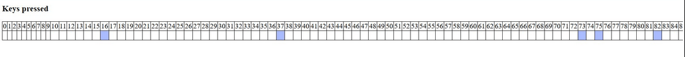

<p>The smallest keyboard state manager, in 46b, adapted from <a href="http://xem.github.io/articles/archive.html#jsgamesinputs">this article</a> and previous golfed projects.

<pre class=code>k={};onkeydown=onkeyup=e=>k[e.which]=e.type[5]</pre>

<blockquote class="twitter-tweet" data-conversation="none" data-lang="fr"><p lang="en" dir="ltr"><a href="https://twitter.com/hashtag/codegolfctober?src=hash&amp;ref_src=twsrc%5Etfw">#codegolfctober</a> day 17:<br><br>A keydown/keyup state manager in 46 bytes (useable in a game loop)<br><br>k={};onkeydown=onkeyup=e=&gt;k[e.which]=e.type[5]<br><br>- Choose a keyCode N.<br>- if(k[N]) =&gt; key is pressed<br>- if(!k[N]) =&gt; key is released<br><br>Demo: <a href="https://t.co/Hrfpn1c1YM">https://t.co/Hrfpn1c1YM</a> <a href="https://t.co/arK781cSu7">pic.twitter.com/arK781cSu7</a></p>&mdash; xem 🔵‏ (@MaximeEuziere) <a href="https://twitter.com/MaximeEuziere/status/1052455697047310336?ref_src=twsrc%5Etfw">17 octobre 2018</a></blockquote>

<br>
<br>
<hr>
<br>

<h2>Day 18: Mini Simon</h2>

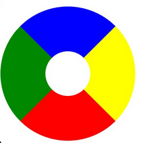

<p>I regolfed our old Simon game and saved 53 bytes by removing old browser hacks and applying the new sound generation techniques from day 5, but even more simplified, because only four different beeps were required. <p>The frequencies of the buttons k=0 to k=3 are computed with "frequency.value=99+k*99". The first 99 makes the sound "0" audible, and the second 99 makes the sounds different enough from each other.

<p><a href="https://t.co/09EnpgFqI3">DEMO</a>

<pre class=code>&lt;body onload="a=(k,q)=>{z=['00F','FF0','F00','080'];if(~k){with(new AudioContext)with(createOscillator())start(0,connect(destination),frequency.value=99+k*99)+stop(.2,s(a,250,-1));z[(3+k)%4]=111};p.style.borderColor='#'+z.join`#`;if(q)k^f[j]?p.outerHTML=':(':++j^g||h()};(h=e=>{for(i=g=f.push(new Date%4);j=i;s(a,500*i--,f[i]))s=setTimeout})(f=[])"onkeyup=a(event.keyCode-37,1) style="width:9em;height:9em;border-radius:50%;border:9em solid"id=p></pre>

<blockquote class="twitter-tweet" data-conversation="none" data-lang="fr"><p lang="en" dir="ltr"><a href="https://twitter.com/hashtag/codegolf?src=hash&amp;ref_src=twsrc%5Etfw">#codegolf</a> day 18:<br><br>A Simon game with sound in 446b<br>(the old version was 499b)<br><br>Demo: <a href="https://t.co/09EnpgFqI3">https://t.co/09EnpgFqI3</a><br>(click on the wheel then play with arrow keys) <a href="https://t.co/AI4JopBygY">pic.twitter.com/AI4JopBygY</a></p>&mdash; xem 🔵‏ (@MaximeEuziere) <a href="https://twitter.com/MaximeEuziere/status/1052977261853454336?ref_src=twsrc%5Etfw">18 octobre 2018</a></blockquote>

<br>
<br>
<hr>
<br>

<h2>Day 19: Print all the chars that the program doesn't contain</h2>

<p>Our <a href="http://xem.github.io/golfing/#asciinotused_en">first attempt</a> back in 2013 took 88 bytes, this tiime it's down to 74b, due to a completely different approach involving ES6 and very hacky things.

<pre class=code>eval(v="for(i=32;i&lt;127;)v.includes(e=String.fromCharCode(i++))||alert(e)")</pre>

<blockquote class="twitter-tweet" data-conversation="none" data-lang="fr"><p lang="en" dir="ltr"><a href="https://twitter.com/hashtag/codegolfctober?src=hash&amp;ref_src=twsrc%5Etfw">#codegolfctober</a> day 19<br><br>Old CGSE challenge<br>&quot;a program that outputs all the ASCII chars that it doesn&#39;t contain&quot;<br><br>eval(v=&quot;for(i=32;i&lt;127;)v.includes(e=String.fromCharCode(i++))||alert(e)&quot;)<br><br>// 74b, alerts the chars !&quot;#$%&amp;&#39;*,-/045689:&gt;?@ ABDEFGHIJKLMNOPQRTUVWXYZ[\]^_`bjkpqwxyz{}~</p>&mdash; xem 🔵‏ (@MaximeEuziere) <a href="https://twitter.com/MaximeEuziere/status/1053328388054794241?ref_src=twsrc%5Etfw">19 octobre 2018</a></blockquote>

<br>
<br>
<hr>
<br>

<h2>Day 20: Char generation</h2>

<p>We explored many ways to generate a char from an integer, to improve day 19's challenge. As far as we know, there are 4 solutions below 30 bytes, but none of them beats String.fromCharCode(i)...

<blockquote class="twitter-tweet" data-conversation="none" data-lang="fr"><p lang="en" dir="ltr"><a href="https://twitter.com/hashtag/codegolfctober?src=hash&amp;ref_src=twsrc%5Etfw">#codegolfctober</a> day 20<br><br>How to generate the i&#39;th ASCII char in JS?<br><br>var i=33;<br>eval(`&#39;\\x${i.toString(16)}&#39;`) // 30b<br>eval(`&#39;\\${i.toString(8)}&#39;`) // 28b<br>String.fromCodePoint(i) // 23b<br>String.fromCharCode(i) // 22b<br><br>Could the 28b version be used to improve yesterday&#39;s challenge? 🤔</p>&mdash; xem 🔵‏ (@MaximeEuziere) <a href="https://twitter.com/MaximeEuziere/status/1053625879971184641?ref_src=twsrc%5Etfw">20 octobre 2018</a></blockquote>

<br>
<br>
<hr>
<br>

<h2>Day 21: Space dweets</h2>

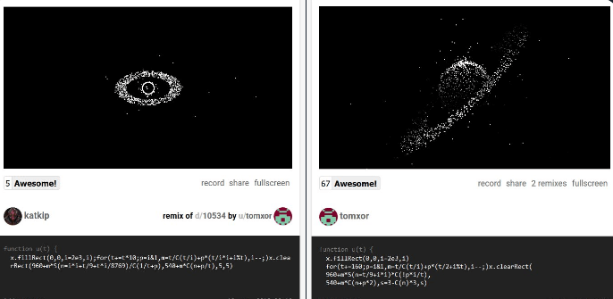

<p>Promoting some great dweets of Tomxor:
<br>Black Hole: <a href="https://t.co/1Sq6ClDDTQ">DEMO</a>
<br>Saturn: <a href="https://t.co/AQ0GQg536T">DEMO</a>

<blockquote class="twitter-tweet" data-conversation="none" data-lang="fr"><p lang="en" dir="ltr"><a href="https://twitter.com/hashtag/codegolfctober?src=hash&amp;ref_src=twsrc%5Etfw">#codegolfctober</a> day 21<br><br>Here are my favourite &quot;space&quot; dweets of October,  by Tomxor<br>(I didn&#39;t contribute, but they deserves more views!)<br><br>Black Hole: <a href="https://t.co/1Sq6ClDDTQ">https://t.co/1Sq6ClDDTQ</a><br>Saturn: <a href="https://t.co/AQ0GQg536T">https://t.co/AQ0GQg536T</a> <a href="https://t.co/cjI8P5C259">pic.twitter.com/cjI8P5C259</a></p>&mdash; xem 🔵‏ (@MaximeEuziere) <a href="https://twitter.com/MaximeEuziere/status/1054080724037500929?ref_src=twsrc%5Etfw">21 octobre 2018</a></blockquote>

<br>
<br>
<hr>
<br>

<h2>Day 22: Mini Split Screen</h2>

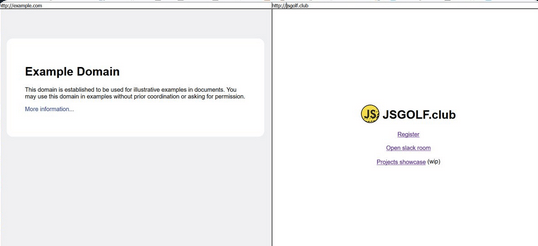

<p>I had done this little split screen browser app last year, using 2, 3, 4 or 6 iframes to avoid having many browser windows in parallel on the same screen, and preventing one of the iframes to change the URL of the parent window.

<p>Now it's golfed in 225b, and with a lot of weird CSS to make it look nice on any screen size!

<pre class=code>&lt;body onbeforeunload=return!1>&lt;input oninput=c.src=value>&lt;input oninput=d.src=value>&lt;iframe id=c>&lt;/iframe>&lt;iframe id=d>&lt;/iframe>&lt;style>*{margin:0;padding:0;box-sizing:border-box}body *{width:50%}#c,#d{height:calc(100vh - 20px</pre>

<blockquote class="twitter-tweet" data-conversation="none" data-lang="fr"><p lang="en" dir="ltr"><a href="https://twitter.com/hashtag/codegolfctober?src=hash&amp;ref_src=twsrc%5Etfw">#codegolfctober</a>  day 22<br><br>225b split screen browser<br><br>Source: <a href="https://t.co/CNGXXeANWJ">https://t.co/CNGXXeANWJ</a><br>Demo: <a href="https://t.co/JmfhGG2LZU">https://t.co/JmfhGG2LZU</a><br>(also exists in x3, x4 and x6) <a href="https://t.co/02VxSSiWZe">pic.twitter.com/02VxSSiWZe</a></p>&mdash; xem 🔵‏ (@MaximeEuziere) <a href="https://twitter.com/MaximeEuziere/status/1054435549719814145?ref_src=twsrc%5Etfw">22 octobre 2018</a></blockquote>

<br>
<br>
<hr>
<br>

<h2>Day 23: Mini Sound Player</h2>

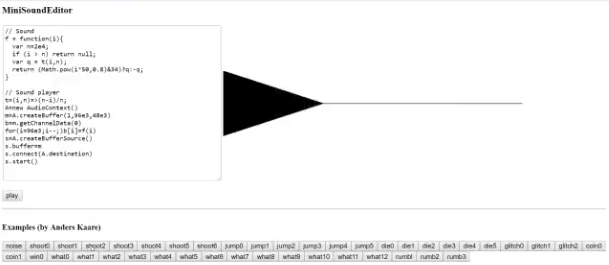

<p>I took the sound player (and sound collection) that Anders Kaare made for our js13k16 and 17 entries, and gathered them in an app that's able to edit, export, play and even draw each sound with a 2-second limit. I also golfed the player in 176b and the result is below. It needs a custom function f(i) that gives the value of each sample.

<pre class=code>t=(i,n)=>(n-i)/n;
A=new AudioContext()
m=A.createBuffer(1,96e3,48e3)
b=m.getChannelData(0)
for(i=96e3;i--;)b[i]=f(i)
s=A.createBufferSource()
s.buffer=m
s.connect(A.destination)
s.start()</pre>

<blockquote class="twitter-tweet" data-conversation="none" data-lang="fr"><p lang="en" dir="ltr"><a href="https://twitter.com/hashtag/golfctober?src=hash&amp;ref_src=twsrc%5Etfw">#golfctober</a> day 23<br><br>176b sound player<br><br>A=new AudioContext()<br>m=A.createBuffer(1,96e3,48e3)<br>b=m.getChannelData(0)<br>for(i=96e3;i--;)b[i]=f(i)<br>s=A.createBufferSource()<br>s.buffer=m<br>s.connect(A.destination)<br>s.start()<br><br>f() generates the buffer&#39;s samples<br>More info: <a href="https://t.co/KWj5OHboHZ">https://t.co/KWj5OHboHZ</a></p>&mdash; xem 🔵‏ (@MaximeEuziere) <a href="https://twitter.com/MaximeEuziere/status/1054784164673847296?ref_src=twsrc%5Etfw">23 octobre 2018</a></blockquote>

<br>
<br>
<hr>
<br>

<h2>Day 24: Mega Million Picker</h2>

<p>The Mega Million lottery happened that month in the USA and people on Twitter tried to make a Mega Million number picker, with specific rules (Picks 5 unique ordered numbers between 1 and 70, then 1 number between 1 and 25).
<p>We joined them and made this version in 88b and a lot of rarely used before ES6 features.

<pre class=code>[z,...a]=Array(71).keys(),[...(f=_=&gt;a[5]?f(a.splice(Math.random(z++)*99,1)):a)(),z%25+1]</pre>
<blockquote class="twitter-tweet" data-conversation="none" data-lang="fr"><p lang="en" dir="ltr"><a href="https://twitter.com/hashtag/codegolfctober?src=hash&amp;ref_src=twsrc%5Etfw">#codegolfctober</a> day 24<br><br>88b Mega Million picking generator<br><br>[z,...a]=Array(71).keys(),[...(f=_=&gt;a[5]?f(a.splice(Math.random(z++)*99,1)):a)(),z%25+1]<br><br>(Picks 5 unique ordered numbers between 1 and 70, then 1 number between 1 and 25.)<br><br>Golfed by <a href="https://twitter.com/subzey?ref_src=twsrc%5Etfw">@subzey</a> <a href="https://twitter.com/superhoge?ref_src=twsrc%5Etfw">@superhoge</a> <a href="https://twitter.com/kchplr?ref_src=twsrc%5Etfw">@kchplr</a> <a href="https://twitter.com/p01?ref_src=twsrc%5Etfw">@p01</a> &amp; me</p>&mdash; xem 🔵‏ (@MaximeEuziere) <a href="https://twitter.com/MaximeEuziere/status/1055137315839008769?ref_src=twsrc%5Etfw">24 octobre 2018</a></blockquote>

<br>
<br>
<hr>
<br>

<h2>Day 25: Mini LOSSST</h2>

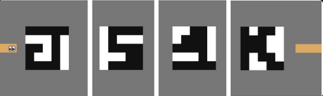

<p>A little throwback to our 1kb LOSSST demake (a.k.a. SN1KE) made during JS1K 2017.
<p><a href="https://js1k.com/2018-coins/demo/3003">PLAY</a>
 
<blockquote class="twitter-tweet" data-conversation="none" data-lang="fr"><p lang="en" dir="ltr"><a href="https://twitter.com/hashtag/codegolfctober?src=hash&amp;ref_src=twsrc%5Etfw">#codegolfctober</a> day 25<br><br>In case you missed it, here&#39;s a demake of my <a href="https://twitter.com/hashtag/js13k?src=hash&amp;ref_src=twsrc%5Etfw">#js13k</a> puzzle game LOSSST, including 55 levels, golfed in 1kb with <a href="https://twitter.com/Xen_the?ref_src=twsrc%5Etfw">@Xen_the</a>, <a href="https://twitter.com/Xaotic?ref_src=twsrc%5Etfw">@Xaotic</a>, <a href="https://twitter.com/justecorruptio?ref_src=twsrc%5Etfw">@justecorruptio</a>, <a href="https://twitter.com/subzey?ref_src=twsrc%5Etfw">@subzey</a>, <a href="https://twitter.com/p01?ref_src=twsrc%5Etfw">@p01</a> and <a href="https://twitter.com/veubeke?ref_src=twsrc%5Etfw">@veubeke</a> during js1k 2018<br><br>Play: <a href="https://t.co/XgtAinNfWz">https://t.co/XgtAinNfWz</a><br>Making-of <a href="https://t.co/8AS8xeikuq">https://t.co/8AS8xeikuq</a> <a href="https://t.co/kz6mdRU53Y">pic.twitter.com/kz6mdRU53Y</a></p>&mdash; xem 🔵‏ (@MaximeEuziere) <a href="https://twitter.com/MaximeEuziere/status/1055721525096185856?ref_src=twsrc%5Etfw">26 octobre 2018</a></blockquote>

<br>
<br>
<hr>
<br>

<h2>Days 26 and 27: Mini Fourier</h2>

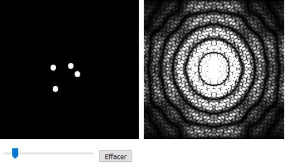

<p>Another js1k 2017 throwback with this instant 2D FFT tracer.
<p><a href="https://js1k.com/2018-coins/demo/3050">PLAY</a>

<blockquote class="twitter-tweet" data-conversation="none" data-lang="fr"><p lang="en" dir="ltr"><a href="https://twitter.com/hashtag/codegolfctober?src=hash&amp;ref_src=twsrc%5Etfw">#codegolfctober</a> day 26<br><br>Another js1k 2018 entry: an interactive 2D FFT tracer golfed w/ <a href="https://twitter.com/subzey?ref_src=twsrc%5Etfw">@subzey</a> <a href="https://twitter.com/BalintCsala?ref_src=twsrc%5Etfw">@BalintCsala</a> <a href="https://twitter.com/justecorruptio?ref_src=twsrc%5Etfw">@justecorruptio</a> <br><br>play: <a href="https://t.co/16wSipTATG">https://t.co/16wSipTATG</a><br>making-of: <a href="https://t.co/8AS8xeikuq">https://t.co/8AS8xeikuq</a><br>Detailed source code, including the smallest JS FFT ever written<a href="https://t.co/FMiW1fvW6u">https://t.co/FMiW1fvW6u</a> <a href="https://t.co/5DfglgvojA">pic.twitter.com/5DfglgvojA</a></p>&mdash; xem 🔵‏ (@MaximeEuziere) <a href="https://twitter.com/MaximeEuziere/status/1055723064640634880?ref_src=twsrc%5Etfw">26 octobre 2018</a></blockquote>

<p>The next day, we isolated and golfed the 1D FFT function from this js1k entry, in 312b.

<pre class=code>F=(e,f)=>{M=Math;n=e.length;for(i=0;i&lt;n;i++){for(j=0,h=i,k=n;k>>=1;h>>=1)j=j&lt;&lt;1|h&1;j>i&&([e[j],e[i],f[j],f[i]]=[e[i],e[j],f[i],f[j]])}for(h=1;2*h&lt;=n;h*=2)for(i=0;i&lt;n;i+=2*h)for(j=i;j&lt;i+h;j++)l=M.cos(k=M.PI*(j-i)/h),m=M.sin(k),o=e[j+h]*l+f[j+h]*m,p=-e[j+h]*m+f[j+h]*l,e[j+h]=e[j]-o,f[j+h]=f[j]-p,e[j]+=o,f[j]+=p}</pre>

<blockquote class="twitter-tweet" data-conversation="none" data-lang="fr"><p lang="en" dir="ltr"><a href="https://twitter.com/hashtag/codegolfctober?src=hash&amp;ref_src=twsrc%5Etfw">#codegolfctober</a> day 27<br><br>Here&#39;s yesterday&#39;s JS FFT golfed in 312b<br>Demo: <a href="https://t.co/vKDitiLawZ">https://t.co/vKDitiLawZ</a><br>(leaks vars M,h,i,j,k,l,m,n,o,p)<br><br>Based on this 359b FFT by <a href="https://twitter.com/antimatter15?ref_src=twsrc%5Etfw">@antimatter15</a>:<a href="https://t.co/VCNlgbJRlS">https://t.co/VCNlgbJRlS</a><br><br>Beats this &quot;140b FFT&quot; that requires ~550b of bootstrap code:<a href="https://t.co/MoEY2SzmZG">https://t.co/MoEY2SzmZG</a> <a href="https://t.co/7i2MXcWgSS">pic.twitter.com/7i2MXcWgSS</a></p>&mdash; xem 🔵‏ (@MaximeEuziere) <a href="https://twitter.com/MaximeEuziere/status/1056221522237554688?ref_src=twsrc%5Etfw">27 octobre 2018</a></blockquote>

<br>
<br>
<hr>
<br>

<h2>Days 28 & 29: Epic Cycles</h2>

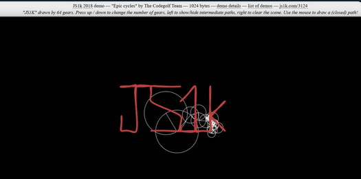

<p>Final throwback to JS1K 2017 with our 1kb epicycloid tracer
<p><a href="https://js1k.com/2018-coins/demo/3124">PLAY</a>

<blockquote class="twitter-tweet" data-conversation="none" data-lang="fr"><p lang="en" dir="ltr"><a href="https://twitter.com/hashtag/codegolfctober?src=hash&amp;ref_src=twsrc%5Etfw">#codegolfctober</a> day 28<br><br>A 1KB interactive epicycloid editing/tracing app golfed with <a href="https://twitter.com/BalintCsala?ref_src=twsrc%5Etfw">@BalintCsala</a> during last JS1K<br><br>Play: <a href="https://t.co/YGjUpfrP1I">https://t.co/YGjUpfrP1I</a><br><br>Making-of: <a href="https://t.co/8AS8xeikuq">https://t.co/8AS8xeikuq</a><br><br>Detailed source code: <a href="https://t.co/0JkD9eB4M7">https://t.co/0JkD9eB4M7</a> <a href="https://t.co/KepkiC9DqU">pic.twitter.com/KepkiC9DqU</a></p>&mdash; xem 🔵‏ (@MaximeEuziere) <a href="https://twitter.com/MaximeEuziere/status/1056465925065596928?ref_src=twsrc%5Etfw">28 octobre 2018</a></blockquote>

<p>The next day; we isolated the 1D DFT function from this entry (simpler than a FFT, but slower), and golfed it in 161b

<pre class=code>D=n=>{for(i in _=[],M=Math,n)for(k in _[i]=[0,0],n)b=M.cos(a=-2*k*M.PI*i/n.length),c=M.sin(a),_[i][0]+=n[k][0]*b-n[k][1]*c,_[i][1]+=n[k][1]*b+n[k][0]*c;return _}</pre>

<blockquote class="twitter-tweet" data-conversation="none" data-lang="fr"><p lang="en" dir="ltr"><a href="https://twitter.com/hashtag/codegolfctober?src=hash&amp;ref_src=twsrc%5Etfw">#codegolfctober</a> day 29<br><br>To save bytes, EpicCycles wasn&#39;t using FFT but DFT<br>Here&#39;s the smallest (161b) DFT in JS golfed w/ <a href="https://twitter.com/BalintCsala?ref_src=twsrc%5Etfw">@BalintCsala</a>:<br>(it works on a 2D array and leaks vars _,a,b,c)<br><br>Demo: <a href="https://t.co/xm4AMF3J6o">https://t.co/xm4AMF3J6o</a><br>Tweet: <a href="https://t.co/z1k8zOzSoW">https://t.co/z1k8zOzSoW</a><br>Based on: <a href="https://t.co/tDzh46b0TW">https://t.co/tDzh46b0TW</a> <a href="https://t.co/mSgub2Tisf">pic.twitter.com/mSgub2Tisf</a></p>&mdash; xem 🔵‏ (@MaximeEuziere) <a href="https://twitter.com/MaximeEuziere/status/1056814095582851072?ref_src=twsrc%5Etfw">29 octobre 2018</a></blockquote>

<br>
<br>
<hr>
<br>

<h2>Day 31: Mini Peach Castle</h2>

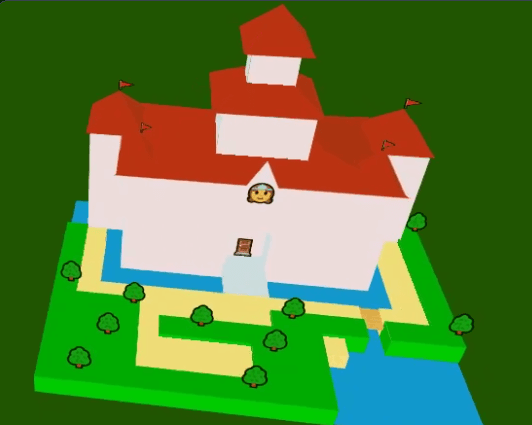

<p>The first sneak peek of my WIP entry for JS1K 2019: Mario 64's Peach Castle, as complete as possible, in 1kb, and rendered with HTML and CSS3D. More details soon!

<blockquote class="twitter-tweet" data-conversation="none" data-lang="fr"><p lang="en" dir="ltr"><a href="https://twitter.com/hashtag/codegolfctober?src=hash&amp;ref_src=twsrc%5Etfw">#codegolfctober</a> day 31<br><br>A super hacky prototype of JS1K 2019 entry containing Peach Castle (from Mario 64) rendered in CSS3D and emoji, in 1026 bytes (minified and regpacked)...<br>and 3330 bytes before regpack.<br><br>Demo: <a href="https://t.co/iOkewmbPG3">https://t.co/iOkewmbPG3</a><br>(optimized for Windows + Chrome) <a href="https://t.co/aKOzuxnQS3">pic.twitter.com/aKOzuxnQS3</a></p>&mdash; xem 🔵‏ (@MaximeEuziere) <a href="https://twitter.com/MaximeEuziere/status/1057689364111781888?ref_src=twsrc%5Etfw">31 octobre 2018</a></blockquote>


</div>


<div class=section id=js13k18>
<h2>JS13kGames 2018</h2>
<h3>august-september 2018</h3>

<br>
<hr>
<br>

<h3>Intro</h3>

<p>

<p>During this compo, I challenged myself to develop three games:
<br>a sequel to my 2015 entry <b>Geoquiz</b>,
<br>a reboot of the puzzle game <b>envelope</b>
<br>and a funambulism VR mini-game called <b>Man on Wire</b>.

<p>The development of these games is detailed below.

<br>
<br>
<hr>
<br>

<p><b>TL;DR:</b>

<p>
<ul>
<li>GeoQuiz 2 is playable <a href="http://js13kgames.com/entries/geoquiz-2">HERE</a> (source code <a href="//github.com/xem/geoquiz2">HERE</a>)
<li>Envelope is playable <a href="http://js13kgames.com/entries/envelope">HERE</a> (source code <a href="//github.com/xem/envelope">HERE</a>)
<li>Man on Wire is playable <a href="http://js13kgames.com/entries/man-on-wire">HERE</a> (source code <a href="//github.com/xem/funambule">HERE</a>)
<li>Tools developed during this compo (I didn't use  all of them):
<br>- <a href="https://github.com/xem/js13k-path">js13k-path</a>
<br>- <a href="https://xem.github.io/int2binary2html/">int2binary2html</a>
<br>- <a href="https://xem.github.io/miniMusic/simple.html">MiniMusic v2</a>
<br>- <a href="https://xem.github.io/miniPixelArt/">MiniPixelArt</a> <br>- <a href=" https://github.com/xem/twemoji-webfont">twemoji-webfont</a>
<br>- <a href="https://codepen.io/xem/pen/OoXpmM?editors=1000">SVGenerator</a>
<br>- <a href="//github.com/xem/CSS3D">CSS3D</a>
<br>- <a href="//github.com/xem/gyro">Gyro</a>
<br>- <a href="https://xem.github.io/terser-online/">Terser-online</a>
</ul>
<p>Results:
<ul>
<li>Geoquiz 2 was ranked 18th on mobile, 80th on desktop, and 16th in the community vote
<li>Envelope was ranked 6th on mobile, 45th on desktop, ad 48th in the community vote
<li>Man on Wire was ranked 13th on WebXR and 48th in the community vote
</ul>

<br>
<br>
<hr>
<br>

<style>
blockquote { width: 450px; max-width: 100%; border: 2px solid #def; border-radius: 5px; padding: 0 10px 10px; }
</style>

<h2>Geoquiz 2</h2>

<h4>Before the compo</h4>
<p>This summer, I thought about my 2015 entry <a href="archive.html#js13k2015">Geoquiz</a>... especially its World map:
<p>
<p>- All the map data was stored in a binary file aside index.html, and requested with an XHR call.
<br>- All the polygons were traced from a starting point (encoded on 2 bytes, one for X and one for Y) and for each new point, a pair of tiny, signed X and Y offsets was encoded on 1 byte (4 bits for each offset).
<br>- The game's zip was 11.9kb (5.3kb for the binary file, 3.2kb for all the places' names and 3.4kb for the code and the music)
<br>- I could have used the free space to redraw the map with more details and less gaps between the countries, but never found the time or motivation to do it.

<p>... Anyway, I wondered if this entry could have been optimized even more.
<p>I first tried converting the binary file to base64 and placing it directly inside index.html. The zip instantly lost nearly 200 bytes, and the XHR call wasn't necessary anymore!
<p><b>Kids, if you need to save bytes for js13k, put all all your code and assets (images, sounds, binary, ...) inside index.html!</b>
<p>I also recompressed the entry with <a href="https://www.advancemame.it/download">AdvanceComp</a>'s tool advzip, which removed another few hundred bytes (the total was around 11kb).
<p><b>Kids, always recompress your entries with advzip!</b>
<p>For the record, the magic command line is: <span style="font-family:courier">.\advzip.exe -z -4 -i 1000 .\entry.zip</span></b>
<br>(if you need to squeeze a few extra bytes, replace 1000 by a bigger number, like 50000, but it'll take more time to process.)
<p>Then I imagined using "polar offsets" instead of X/Y offsets for each new point of a polygon, and tried keeping the total under 7 bits (to encode each point in an ASCII char) by using 3 bits for angle and 4 bits for distance.
<p>Here's a test with the Brazil, encoded on 38 chars, then reduced to 21 chars (for the record, it took 74 bytes in my 2015 entry):
<p>
<p>It was pretty cool, but not comfortable to draw: there was too few freedom for the angles (only 8 possible values), and the result was visibly degraded because of this limit.
<p>So I changed that, and instead, used 4 bits for the angle and 3 bits for the distance.
<p>This lead to the release of my tool: <a href="http://xem.github.io/js13k-path/">js13k-path</a>
<blockquote class="twitter-tweet" data-lang="fr"><p lang="en" dir="ltr"><a href="https://twitter.com/hashtag/js13k?src=hash&amp;ref_src=twsrc%5Etfw">#js13k</a> path tracer v0.2:<br>- The canvas can be as big as 2048px * 1024px<br>- The first point of the path is encoded on 3 ASCII chars<br>- each new point is encoded on 1 ASCII char (4 bits for angle, 3 bits for distance, distance is a multiple of 4 between 4 and 32) <a href="https://t.co/xn09Ve4jpa">pic.twitter.com/xn09Ve4jpa</a></p>&mdash; xem 🔵‏ (@MaximeEuziere) <a href="https://twitter.com/MaximeEuziere/status/1011667171431378944?ref_src=twsrc%5Etfw">26 juin 2018</a></blockquote>


<p>As you can see in this tweet, at first, I encoded the start coordinates on 3 ASCII chars (11 bits for X and 10 bits for Y), but it was unnecessarily complicated. Instead, I encoded each coordinate on 1 byte (i.e. a number ranging from 0 to 255), and converted them in characters like the rest of the polygons.
<br>Problem: if they were converted to (UTF-8) chars like the rest of the polygons, every value higher than 127 would bacome a non-ASCII char and take 2 bytes, which is not optimal!
<br>Solution: either use a binary file, or encode all chars in another encoding, like Latin-1!

<p>So I unearthed some compression tricks I had seen and used before (in <a href="http://codegolf.github.io/zpng/">Zpng</a> and <a href="http://xem.github.io/JSciissors/">JSciissors</a>), and I worked on a tool allowing to easily store binary code directly inside index.html. I came up with 3 different solutions, and I compiled them in a single tool: <a href="https://xem.github.io/int2binary2html/">int2binary2html</a>

<p><blockquote class="twitter-tweet" data-lang="fr"><p lang="en" dir="ltr">🚀New tool for <a href="https://twitter.com/hashtag/js13kgames?src=hash&amp;ref_src=twsrc%5Etfw">#js13kgames</a> 2018:<br><br>𝗶𝗻𝘁𝟮𝗯𝗶𝗻𝟮𝗵𝘁𝗺𝗹<a href="https://t.co/ykXvORLC9T">https://t.co/ykXvORLC9T</a><br><br>Wanna use a lot of byte-size numbers in your game?<br>Store them in binary directly inside your index.html<br>This app proposes 3 different approaches to retrieve them:<br>Self-XHR, Latin-1 string &amp; Base64 <a href="https://t.co/fNke3UYEAI">pic.twitter.com/fNke3UYEAI</a></p>&mdash; xem 🔵‏ (@MaximeEuziere) <a href="https://twitter.com/MaximeEuziere/status/1024628879959511040?ref_src=twsrc%5Etfw">1 août 2018</a></blockquote>


<p>In my case, the "Latin-1" approach seemed to be the best solution to store such an amount of data, especially if I reduce to the minimum the use of chars that need to be escaped, like '\0', '\r', '\\' and "`".

<p>To test the js13k-path and int2binary2html tools together, I drew a detailed USA map.
<p>The 50 polygons (and some islands) amounted to 751 bytes of polygon data.
<br>For comparison, the USA map in Geoquiz used 943 bytes of polygon data and didn't even include the biggest part of Alaska.
<p>
<p>Then I redrew it two more times, with less and less points, to save as many bytes as possible, while keeping every US state recognizable (it can seem crazy but it's actually pretty fun to "golf" polygons!).
<p>
<p>These iterations reduced the polygon data down to 439 and 416 bytes, respectively. (<a href="https://codepen.io/xem/pen/VBBmQm">LIVE DEMO</a>)

<br>

<p>Thanks to <b>@innovati</b> and <b>@alternative451</b> for their support and feedback during these tests!

<br>

<p>I also updated my MiniMusic tool with the help of <b>@d_nghia</b>, but we'll talk about it later!
<p><blockquote class="twitter-tweet" data-lang="fr"><p lang="en" dir="ltr"><a href="https://twitter.com/hashtag/js13k?src=hash&amp;ref_src=twsrc%5Etfw">#js13k</a> starts tomorrow!<br><br>Time to update my 2017 tool MiniMusic!<a href="https://t.co/KeiphbXzXM">https://t.co/KeiphbXzXM</a><br><br>The editor now has a keyboard on the left, a functioning tempo field, and (FINALLY) no more &quot;clicking noises&quot; between each note, thanks to a new algorithm!<br><br>Thx <a href="https://twitter.com/d_nghia?ref_src=twsrc%5Etfw">@d_nghia</a> for his help! <a href="https://t.co/WTmSSNlmGw">pic.twitter.com/WTmSSNlmGw</a></p>&mdash; xem 🔵‏ (@MaximeEuziere) <a href="https://twitter.com/MaximeEuziere/status/1028728946064584714?ref_src=twsrc%5Etfw">12 août 2018</a></blockquote>


<p>At least, this update of MiniMusic was appreciated!
<p>

<br>
<h1>~~~</h1>
<h4>During the compo</h4>

<p>I decided to use these new tracing techniques in a new Geoquiz game. A bigger and better game than the original!
<br>Regarding the theme "offline", I'll try to do something involving being really offline to play the game.

<p>So I put together a big world map by overlapping a public domain HD image showing all countries and capitals (the one I used for my Brazil test), and a map of the USA states ripped from Bing Maps... (because Google Maps replaced its Mercator projection with a goddamn 3D globe!):

<p>
<br><a href="images/js13k18/map.jpg" download>Download</a> (8.6MB)

<p>I also made a big database of everything that I thought could be featured in the game:
<br>- The 590 items already present in Geoquiz 1: <b>Countries, Capitals, US states, US capitals</b> and <b>Famous places</b>.
<br>- 9 new datasets: <b>Countries flags, Territories, Seas*, Lakes*, Streams*, Deserts*, Volcanoes*, Mountains*</b> and <b>Forests*</b>
<br>(*not all of them, just the biggest / most famous ones).
<br>- And other sets that I didn't keep because they were less fun, too hard, or used too much extra space: Oceans, Continents, Cities, Tectonic plates, Oceanic trenches, Extreme points on Earth, Sovereign states flags / capitals, Disappeared countries (like USSR, Tchekoslovaquia or Zaïre), plus for each country: Main currency, Main language, Hymn, Name of inhabitants, Time zone, Current president/dictator, etc.

<p>In total, the 14 sets I kept in the game represent 1124 questions (about twice the amount of questions present in Geoquiz!)... or 925 if we exclude flags. You can see each dataset in the entry's source code <a href="https://github.com/xem/geoquiz2/blob/gh-pages/temp.txt">HERE</a>. I also ordered each set by increasing difficulty (which is, of course, very subjective).

<p>I edited my js13k-path tool to let me easily draw each item on the world map (stretched down to 2048x1024px), while avoiding all the chars that need to be escaped, and export everything as an array of numbers, ready to be fed to my other tool int2binary2html. You can try this editor <a href="https://xem.github.io/geoquiz2/editor.html">HERE</a>.

<p>

<p>It took me a few days to find the right settings and to draw everything as optimized as possible, in order to fit in my budget (around 10.5kb for all the names and the map data, the rest will be used by the title screen, the game's code and the music.)
<br>I first reused my USA map experiment from before the compo, but ended up redrawing all the countries to let them be nicely aligned with with Canada and Mexico (and with each other).

<p>Anyway, here are the 199 countries, 50 US states and 52 other territories.
<br>Total size: 12kb uncompressed, and 6.74kb zipped (including 2.99kb of names, capitols and country code used to produce emoji flags).
<br>That's much better than Geoquiz's map, right?
<br>Note: contrary to Geoquiz 1 , the World map and the US map are now drawn on the same screen, but with two different levels of detail in order to make the USA zoomable without losing too much quality.
<p>

<p>Fast-forward a few days of drawing, and here are the 26 lakes, 76 streams, 24 deserts, 19 forests, 25 volcanoes, 37 mountains and 95 famous places. (total size: 19.3kb uncompressed, and 10.0kb zipped! Pretty unbelievable!)

<p>

<p>Here's all the data used to make this image, concatenated in the same text file. You can notice that all the names take more bytes than the actual paths (13kb vs 6.3kb), but they also compress much better, because words written with a 26-letter alphabet have much less entropy than random-ish bytes).

<p>

<p>For the record, the streams data is nearly 1kb bigger than the US map's data!<br>But that's quite normal: streams use more points than US states on average, and there are 76 of them!

<p>For the final dataset (the 77 seas) I decided to not draw them using polygons, but use circles instead, which allowed to encode each sea on 3 bytes (2 bytes for the center's X and Y, and 1 byte for the radius). The sea editor can be tested <a href="https://xem.github.io/geoquiz2/seaeditor.html">HERE</a>.

<p>

<p>Total size (for the 14 datasets): 10.6kb zipped. Yay! That fits my data budget! (...give or take 100 bytes)

<p><b>Organizing the data</b>

<p>The names of the items in each category are concatenated in CamelCase and retrieved using a regex. For example the places:

<pre class=code>places = `Cape canaveralChrist the redeemerGreat wall of chinaSphinxEiffel towerPisa towerSagrada familiaBig ben...`.split(/(?=[A-Z])/)

// ["Cape canaveral", "Christ the redeemer", "Great wall of china", "Sphinx","Eiffel tower", "Pisa tower", "Sagrada familia", "Big ben", ...]</pre>

<p>The binary data is also concatenated.
<br>When it represents fixed-size items like places (encoded on 2 bytes), it looks like this: 

<pre class=code>places_binary = `HacªÓN—]‚?ˆG‚K€9LMÓN...`.match(/.{2}/g);

// ["Ha", "cª", "ÓN", "—]", "‚?", "ˆG", "‚K", "€9", "LM", "ÓN", ...]</pre>

<p>When the data represents polygons (countries, US states, territories, forests, deserts or lakes), the "reserved" character (i.e. not present in the rest of the data) "DEL" (U+127) is used to separate islands, while ~ (U+126), also reserved, is used to separate items.
<br>For items with capitals (countries and US states), the capital coordinates are placed at the beginning of each item. For example, the US states and capitals are encoded like this:

<pre class=code>
us_binary = `0X“P)~+=&OOWMrUsbW\na})>K9;Zx/PAHS8p~7X5Ur+~9l:eKjzs	+X=~:k:k},M~GrJpMm\n\n~\\}X}sa:2Q~WhYclY;0~]i[k*ia~hghg(...`.split`~`,

// ["0X“P)", "+=&OOWMrUsbW↵a})>K9;Zx/PAHS8p", "7X5Ur+", "9l:eKjzs	+X=", ":k:k},M", "GrJpMm↵↵", "\}X}sa:2Q", "WhYclY;0", "]i[k*ia", "hghg(", ...]</pre>

<p>The second US state of this list (Alaska) is encoded like this:

<p>

<p>Now it's time to code!

<p><b>Title screen</b>

<p>No rotating globe on the title screen this year (this globe took me too many bytes and hours in 2015).
<br>Just a fixed screen and some emoji for the graphics.
<br>For some reason, on Android, the game page needs to be reloaded in order to see the right font on the title screen.
<br>This screen uses ~300bytes of code.
<br>PS: in the source code <a href="https://github.com/xem/geoquiz2/blob/gh-pages/old5/game.html#L443-L470">HERE</a>, all the emoji are escaped as HTML entities because the file is encoded in Latin-1, where only ASCII and 127 other latin chars are allowed.

<p>

<p><b>Responsive canvas</b>

<p>That feature was missing in the first game: a canvas that resizes depending on your screen size.
<br>This is always boring to do because all mouse/finger coordinates have to be translated to canvas coordinates, which is not doable natively.
<br>Here's the shortest coordinate converter I managed to do (for a 1024 x 768px canvas):
<pre class=code>
<b>/* CSS */</b>
canvas { max-width: calc(100vh * 1.35) }
</pre>

<p>Note: 1.35 is the canvas ratio: 1024/768.
<br>Also, to save a few bytes, the max-width can be simplified to "135vh"!

<pre class=code>
<b>/* JS */</b>

xy = function(e){
  w = a.offsetWidth;
  
  // mobile
  if(e.changedTouches){
    x = e.changedTouches[0].pageX * 1024 / w;
    y = e.changedTouches[0].pageY * 1024 / w;
  }
  
  // desktop
  else{
    x = e.pageX * 1024 / w;
    y = e.pageY * 1024 / w;
  }
}

onmouseup = function(e){
  xy(); // saves the pointer coordinates in the vars x and y
}
</pre>

<p><b>The flags problem</b>

<p>It's 2018 and Windows 10 still has zero support for Emoji country flags, Linux may support them in some distros (but as far as I know, it doesn't), while MacOS, iOS and Android support them fine.
<p>But this time, it won't stop me from adding a flags quiz in the game! At least, for the countries.
<br>I negotiated with <b>@end3r</b> the right to live-load an emoji web font on OS's that don't support them, as long as the game can work without them and the player agrees.
<p>

<p>This authorization was almost a poisoned gift, because it took me almost two entire days to find a solution that works on Windows 10's Firefox, Chrome and Edge.
<br>
You can read the detail in these two Twitter threads:

<p><blockquote class="twitter-tweet" data-lang="fr"><p lang="en" dir="ltr">Nightmare of the day (<a href="https://twitter.com/hashtag/js13k?src=hash&amp;ref_src=twsrc%5Etfw">#js13k</a>):<br><br>I wanted to load a color emoji webfont, and draw emoji (especially flags but not only) on a canvas, on Windows browsers (because, of course, browsers can&#39;t display flags natively on Windows).<br><br>How hard could that be?<br><br>Thread 👇</p>&mdash; xem 🔵‏ (@MaximeEuziere) <a href="https://twitter.com/MaximeEuziere/status/1030165022809448448?ref_src=twsrc%5Etfw">16 août 2018</a></blockquote>


<p><blockquote class="twitter-tweet" data-lang="fr"><p lang="en" dir="ltr">Web font vs. emoji flags, day 2! <a href="https://twitter.com/hashtag/js13k?src=hash&amp;ref_src=twsrc%5Etfw">#js13k</a><br>(Day 1: <a href="https://t.co/KC6GH80wVd">https://t.co/KC6GH80wVd</a>)<br>So if we load Twitter&#39;s twemoji.ttf and Google&#39;s NotoColorEmoji.ttf in cascade, we can display all 199 countries flags on Fx, and 198 flags on Chrome &amp; Edge, because Noto doesn&#39;t include Kosovo&#39;s flag.<br>(1/n) <a href="https://t.co/9BBk7DFK07">pic.twitter.com/9BBk7DFK07</a></p>&mdash; xem 🔵‏ (@MaximeEuziere) <a href="https://twitter.com/MaximeEuziere/status/1030423890265354241?ref_src=twsrc%5Etfw">17 août 2018</a></blockquote>


<p>But I'm happy with the result: all 199 countries flags (except Kosovo, that has never been included in Google's Noto Emoji font) can appear in the game!

<p>I also made a dedicated tool to load these emoji fonts and ask the player's agreement according to the rules, you can find it <a href="https://xem.github.io/twemoji-webfont/">HERE</a>.

Long story short, on Windows and Linux, the fonts Twemoji and Noto Color Emoji are hosted on my Github repo and loaded like this:

<pre class=code>
<b>/* CSS */</b>
@font-face{font-family:f;src:url(//xem.github.io/geoquiz2/n.ttf),url(//xem.github.io/geoquiz2/t.ttf)}
</pre>

<pre class=code>
<b>/* JS */</b>
if(WindowsorLinux){
  body.style.fontFamily = `f`;
}
</pre>

<p><b>Game modes</b>

<p>In Geoquiz 1, there was only one game mode, 13 levels of increasing difficulty, with 10 questions and a 30,000km error counter in each level.
<br>When the error counter reached 0, the game was over. This was nice, but it could also be quite frustrating because the last levels were pretty difficult to reach without restarting the game a few times.
<p>This time, there won't be any levels. All the datasets will be accessible at the same time and picked randomly, while the difficulty will progressively increase.
<br>Also, I'll let the player choose between two modes, the "Least error" mode similar to the first game, and the new "Highest score" mode where a list of questions is asked entirely, and at the end, the player receives a score.

<p>Here's the menu flow so far (the visuals are not definitive):

<p>

<p><b>Size check n°1</b>

<p>Let's check if we're still on the 13kb track...

<p>The code I've written so far use 1.9kb (minified and zipped)
<p>And if I add all the data at the beginning of index.html, the total is 12.3kb!
<p>Let's use the remaining space to ask the questions, draw the map(s), implement the gameplay, display the scores and play some music!
<br>I'm not sure how I'll do it but it looks like every byte will count!

<p><b>Questions</b>

<p>Picking and asking the questions to the player was much less easy than it sounds.
<br>For the visuals, I went with a full black screen and a sentence stating the item category and its name.
<br>If flags are enabled, they will be drawn as big emoji instead of writing a country name.

<p>For the picking, the game always start with a country, a capital and a place (to avoid getting a weird question at the beginning of the game, then the category is chosen randomly, but with 3 restrictions: 
<br>1) There is a 30% chance to get a country, a capital or a place (the 3 biggest datasets) and 70% chance to get one of the 11 others sets.
<br>2) As long as it's possible, the same category isn't picked twice in a row.
<br>3) US states and capitals are not asked before the 20th question. These datasets are very hard for most players, and I decided to give them a bit of rest for the first questions.

<p>All the sets are ordered by increasing difficulty, and all the questions are picked in the first 10 items not asked yet inside each dataset. The more you play, the harder it gets!


<p>Here's a video showing the 1123 questions present in Geoquiz 2. (visuals are not final)
<p><iframe width="630" height="394" src="https://www.useloom.com/embed/83056e62189e4dddbd0d89e3ed486976" frameborder="0" webkitallowfullscreen mozallowfullscreen allowfullscreen></iframe>

<br>Many tests and adjustments were necessary to ensure that there is always something to ask, and that no question is asked twice... however the same country can appear many times during a game: by its name, by its capital and by its flag. I suppose it won't matter very much given all the data and all the randomness there is.
<br>I also had to convert ASCII country codes like "US" into Flag emoji and make sure that all the long names get written on two lines, which is never easy on a JS canvas (we can't use \r, \n or &lt;br>, we have to cut the string in two parts and call fillText() twice with different Y coordinates...
<br>To split the names on two lines, I first used this regex: 

<pre class=code>nameparts = itemname.match(/.{1,15}( |$)/g);</pre>

<br>The first line could take as long 1 to 15 chars + 1 space or 1 end-of-string, and the second line (if any) could take the remaining 1-15 chars + 1 end-of-string.
<br>It worked fine, until the volcano <b>Eyjafjallajokull</b> popped up in the game.
As there are no spaces, the regex only took the 15 last chars + the end-of-string, and the initial "E" was lost.
<br>After a bit of thinking, I fixed it by replacing the 15 with a 16 in the regex. Good enough!


<p><b>World map</b>

<p>Here, I ran into a very weird and unexpected bug:
<br>In my map editor, I drew the World map on a 2048*1024px canvas.
<br>Though, in the game, I want to trace the map scaled down by a factor of 2, i.e. on a 1024*512px canvas (this is important in order to have better performance on slow PCs and mobiles), so I applied a "*.5" coefficient to every polygon's start coordinates and every polygon's distance between two points.
<br>Pretty basic, eh? But this happened:

<p>

<p>These big holes appeared around some countries (especially on the right of the map), and some islands of Canada moved in crazy places, sometimes inland!
<br>After an afternoon of debugging, I discovered that this was not exactly an error in my code.
<br>All these problems were caused by JS floating-point errors piling up, getting bigger, point after point, when I divided each offset by 2.
<br>The more points a polygon had, the more distorted it became, and that's why the problem is more visible in Canada, Russia and Asia (these countries are very large).
<p>I thought I was condemned to render my game on a huge canvas, then it hit me!
<br>Instead of dividing every offset by 2 inside the coordinates computation like this:
<pre class=code>
<b>// Draw a polygon with a 0.5 scale (buggy)</b>
c.beginPath();
c.moveTo(x = startX/2, y = startY/2);
for(i in points){
  c.lineTo(
    x = x + points[i].distance/2 * Math.cos(points[i].angle),
    y = y + points[i].distance/2 * Math.sin(points[i].angle)
  );
}
c.closePath();
</pre>

<p>The trick is to compute every point of the polygon as if it was in normal size, and only perform the downscale inside the moveTo() and lineTo() calls.

<pre class=code>
<b>// Draw a polygon with a 0.5 scale (fixed)</b>
c.beginPath();
x = startX;
y = startY;
c.moveTo(x/2, y/2);
for(i in points){
  x = x + points[i].distance * Math.cos(points[i].angle);
  y = y + points[i].distance * Math.sin(points[i].angle);
  c.lineTo(x/2, y/2);
}
c.closePath();
</pre>

<p>The difference is very subtle, but it's enough to fix everything! Oof!

<p>

<p>After a couple days where I fixed some encoding issues and wrote a generic tracer for every kind of polygon in the game, I finally obtained this map, by layering a radial gradient background, the countries (in green - or white in the poles), the lakes (in blue), the forests (in transparent black), the deserts (in transparent white), and the streams (in blue, with a 0.5px line width).

<p>

<br>Deserts, forests and streams aren't entirely opaque to allow seeing the borders of all the countries below them.
<br>The problem is that there are two forests that overlap (in Russia), and many deserts that overlap each other (in Australia, Asia and America). I'll redraw the deserts without overlaps during the final adjustments.

<p><b>Size check n°2</b>

<p>The zip is now 13.2kb.

<p>Time to start worrying about my byte budget...
<p><blockquote class="twitter-tweet" data-lang="fr"><p lang="en" dir="ltr">It&#39;s the first time I have such a hard byte budget for a <a href="https://twitter.com/hashtag/js13k?src=hash&amp;ref_src=twsrc%5Etfw">#js13k</a> game!<br><br>Data: more than 1100 items, ~10.5kb zipped<br>Music: ~400b zipped<br>Title screen: ~400b zipped<br>Menus/final score: ~500b zipped<br>HTML+CSS: ~300b zipped<br>Quiz/map/gameplay: ~900b zipped<br><br>Why do I do this to myself? 😩</p>&mdash; xem 🔵‏ (@MaximeEuziere) <a href="https://twitter.com/MaximeEuziere/status/1030907904642166784?ref_src=twsrc%5Etfw">18 août 2018</a></blockquote>


<p>I spent almost a full week-end rewriting all my code as clean, simplified and optimized as possible. Didn't touch the data.
<br>I also made all my JS vars local (by embedding all my code in a big onload() function) so they could be renamed by the minifier
<br>As a result, the zip fell to 12.3kb! Let's go for the final sprint!

<p><b>Gameplay</b>

<p>The gameplay is the same for all the questions: the players click a place on the map, and see the distance between their click and the right answer.
<p>I've improved this part compared to Geoquiz 1: now the distance is also measured offscreen! As shown in this image, the error is measured by taking into account the Earth's curvature, and the dotted line doesn't have to go all the way through America and Africa to reach Australia.

<p>

<p>Like in the first edition, a bunch of code was necessary to compute the shortest path from the click coordinates to each polygon (especially with this new "offscreen" measurement), and I had to add a special case for the seas (encoded as circles, and highlighted underneath the countries and islands).

<p>

<p>Also, when a question is about an US state or capital, the map is zoomed on the USA.

<p>

<p>There will be no upside-down maps this year. I had done that to respect the 2015 theme "reversed", and I thought it was original, but it was annoying for most players. But from time to time, the map will become black, to hide the borders and add a bit of challenge.

<p>

<p><b>Score</b>

<p>The score screen is very simple, due to the tiny remaining byte budget.
<br>In "high score" mode, every question receives a note on 100 (100% - 1% every second lost - 1% every 100km of error) and the mean of all notes is displayed.
<br>In "minimum errors" mode, the score is the number of questions answered before reaching 50,000km.
<br>The "share" button redirects on a dedicated page on my Github

<p>

<p><b>Music</b>

<p>I spent all this development with a single music in my head, almost 24h/24: Animaniacs - Yakko's World

<p><iframe width="1106" height="513" src="https://www.youtube.com/embed/x88Z5txBc7w" frameborder="0" allow="autoplay; encrypted-media" allowfullscreen></iframe>

<p>So I naturally decided to use it in the game... so it gets stuck in YOUR heads too!
<p>My musician friend <b>Nghia</b> drew the recurring part of the melody (plus the transition) inside my newly updated MiniMusic tool.

<p>

<br>The output code was pretty light, around 450 bytes.
<br>Though, most of the size was used by an array of little numbers... A-HA! Are you thinking what I'm thinking?
<p>I put these numbers inside <b>int2binary2html</b> and ended up having all the melody fitting in this little function.
<br>

<pre class=code>
music = function(){
var audio = new AudioContext,
gain = audio.createGain(),
note,
notes,
oscillator;
for(note in notes = `\n\n\n\n\n\n\n\n\n\n\ncccc\r\nccc\n\n\n\n\n\n\n\n\n\n\ncccc\nccc\n\n\n\r\nccc\nc\rcc`){
  oscillator = audio.createOscillator(),
  oscillator.connect(gain),
  gain.connect(audio.destination);
  oscillator.start(note * .2);
  oscillator.frequency.setValueAtTime(415 * 1.06 ** (13 - notes.charCodeAt(note)), note * .2),
  gain.gain.setValueAtTime(.5, note * .2); 
  gain.gain.setTargetAtTime(.001, note * .2 + .18, .005)
  oscillator.stop(note * .2 + .19);
}
}
</pre>

<br>(The string "notes" contains a lot of non-printable chars. It's actually 150 chars long)

<p>Played in an infinite loop, this music only added 204 bytes into the game's zip! I can't afford a lot of free space, but I can definitely free up 204 bytes for an entire music!

<p><a href="https://codepen.io/xem/pen/KBEBPM?editors=1012">Here's an experiment</a> where the theme gets is played a little higher and a little faster after the end of the loop. It sounded nice, but I didn't know how to keep it playing long enough without getting too high or too fast, so I didn't keep it.

<p><b>Golfing</b>

<p>After taking care of all the little details and cross-browser issues, the zip reached 14.1kb.

<p>I spent another day golfing all my code and removing every superfluous text and decoration.

<br>I also simplified many items names ("Czech republic" => "Czechia", "The pyramids of Giza" => "Giza pyramids", etc.)
<br>Finally, as suggested on slack, I switched from babelJS to <a href="https://skalman.github.io/UglifyJS-online/">Uglify-ES</a> to minify my JS code, which saved me a little more than 200 bytes before gzip.
<p>At the end of the first week of the compo, the game's code was complete, golfed, minified, and there were "just" 855 bytes to cut in order to make the zip pass the 13kb barrier.

<p>For the record, the 199 countries and their capitals use 3218 bytes of binary data, so about 16 bytes per country.
<br>Similarly, each US state and its capital take about 559/50 = 11 bytes, each territory about 284/50 = 6 bytes, each stream about 781/76 = 10 bytes, and each desert/forest about 8 bytes, while all the other datasets have a fixed amount of bytes per item (places, volcanoes, mountains: 2 bytes, seas: 3 bytes)

<p>I took the (difficult) decision to redraw all the polygons of the game with a little less points.

<p>First, the streams

<p><blockquote class="twitter-tweet" data-conversation="none" data-lang="fr"><p lang="en" dir="ltr">So, with the music my zip is 855 bytes too large and the code can&#39;t be compressed any more.<br>It&#39;s time to use less data!<br>First, I let&#39;s re-trace all the streams with less details and without their affluents.<br>259 bytes saved! 596 to go.<a href="https://twitter.com/hashtag/js13k?src=hash&amp;ref_src=twsrc%5Etfw">#js13k</a> <a href="https://t.co/Htrm0ANxhY">pic.twitter.com/Htrm0ANxhY</a></p>&mdash; xem 🔵‏ (@MaximeEuziere) <a href="https://twitter.com/MaximeEuziere/status/1031811080786468865?ref_src=twsrc%5Etfw">21 août 2018</a></blockquote>


<p>Then, all the countries!

<p><blockquote class="twitter-tweet" data-conversation="none" data-lang="fr"><p lang="en" dir="ltr">These extra bytes won&#39;t go away alone.<br>I&#39;m redrawing the entire World map, again.<br>I call this &quot;polygon golfing&quot;: the goal is to make a country polygon use less points, but keep it highly recognizable.<br>Sometimes, they even look better with less points!<a href="https://twitter.com/hashtag/js13k?src=hash&amp;ref_src=twsrc%5Etfw">#js13k</a> <a href="https://t.co/kZJCCfv4AB">pic.twitter.com/kZJCCfv4AB</a></p>&mdash; xem 🔵‏ (@MaximeEuziere) <a href="https://twitter.com/MaximeEuziere/status/1031958419996127233?ref_src=twsrc%5Etfw">21 août 2018</a></blockquote>

<p>

<p>This tweet was liked by <b>Notch</b> himself! OMG.

<p><blockquote class="twitter-tweet" data-conversation="none" data-lang="fr"><p lang="en" dir="ltr"><a href="https://twitter.com/hashtag/js13k?src=hash&amp;ref_src=twsrc%5Etfw">#js13k</a> polygon golfing:<br>- 199 countries redrawn<br>- 554 bytes saved<br>- Not really degraded visually<br>- The zip now weighs 13kb + 223 bytes<br>🤞 <a href="https://t.co/QwpiCuuDvi">pic.twitter.com/QwpiCuuDvi</a></p>&mdash; xem 🔵‏ (@MaximeEuziere) <a href="https://twitter.com/MaximeEuziere/status/1032201527761543168?ref_src=twsrc%5Etfw">22 août 2018</a></blockquote>

<p>


<p>(I also saved a lot of bytes by not drawing the USA as a country, but instead, considering all the USA dataset as the answer to the question "USA")


<p>Then the territories...

<p><blockquote class="twitter-tweet" data-conversation="none" data-lang="fr"><p lang="en" dir="ltr">After redrawing all the territories (like Greenland) and the deserts, the zip finally passed below 13kb, without having to remove any of the 1123 questions of the game!<br>Let&#39;s use the extra 19 bytes for a final mini feature!<a href="https://twitter.com/hashtag/js13k?src=hash&amp;ref_src=twsrc%5Etfw">#js13k</a> <a href="https://t.co/WZuIYvPDUC">pic.twitter.com/WZuIYvPDUC</a></p>&mdash; xem 🔵‏ (@MaximeEuziere) <a href="https://twitter.com/MaximeEuziere/status/1032240997831503872?ref_src=twsrc%5Etfw">22 août 2018</a></blockquote>


<p>At this point, the zip was finally below 13kb. But the first beta testers requested some extra features, so I also re-drew all the USA (a fifth time!)

<p><blockquote class="twitter-tweet" data-conversation="none" data-lang="fr"><p lang="en" dir="ltr">In the meantime, I re-drew all the USA map, with better borders and more accuracy on the west coast, and somehow 35 bytes smaller!<a href="https://twitter.com/hashtag/js13k?src=hash&amp;ref_src=twsrc%5Etfw">#js13k</a> <a href="https://t.co/7jgfZbthNx">pic.twitter.com/7jgfZbthNx</a></p>&mdash; xem 🔵‏ (@MaximeEuziere) <a href="https://twitter.com/MaximeEuziere/status/1032330531340476417?ref_src=twsrc%5Etfw">22 août 2018</a></blockquote>

<p>

<p><b>The big latin-1 fright</b>

<p>I pushed my game on Github to let some testers try it, and they sent me this screenshot: 

<p>

<p>All the map was broken! At first I thought it only happened on MacOS, but when I visited <a href="https://xem.github.io/geoquiz2/game.html">the same URL</a> on Windows I had the same problem. Whaaaaat?!

<p>Turns out, my HTML page contains a "&lt;meta charset=iso-8859-1>" to "force" the content to be parsed as latin-1, and this works fine locally. But Github pages enforces UTF-8 parsing through HTTP headers, and HTTP headers are stronger than the charset meta tag. 
<br>If it's read as an UTF-8 string, almost all my data is corrupted! I was really panicked at this moment.
<p>But <b>End3r</b> kindly agreed to upload my game on js13kgames' server so we could see if it enforced UTF-8 too, and by chance, it didn't! Oof again!

<p><b>Last minute features</b>

<p>My testers mainly asked two things: they wanted less clicks between the questions, and they wanted me to reintroduce a time limit for each question, like in the first game.

<p>I solved both problems by introducing a little game loop in the game. This loop executes 30 times per second and only acts under certain conditions, to avoid forcing on the CPU.

<br>On the map screen, it decrements a 20-second timer and shows a progress bar.

<p>

<br>Geoquiz 1 was super slow on mobile because all the map was redrawn at each frame. I avoided it this time:

<br>At each frame, a new yellow rectangle is drawn on top of the last one, so the whole screen - including the map - doesn't need to be re-rendered every time

<p>And on the feedback screen, another 3-second timer is used to move automatically to the next question.

<p><b>The final bytes</b>

<p>After another day of golfing, I was just 16 bytes over the budget, and had no more ideas to make everything fit.
<p>I decided to remove 3 hard questions from the game:

<p><blockquote class="twitter-tweet" data-conversation="none" data-lang="fr"><p lang="en" dir="ltr">After an intense golfing session, I finally managed to add a time limit, automatic screen transitions and many other enhancements in 13kb+16b.<br>I removed 3 (too hard) questions to reduce it to exactly 13kb.<br>So... Geoquiz 2 will have 1120 questions instead of 1123! 🤷‍♂️<a href="https://twitter.com/hashtag/js13k?src=hash&amp;ref_src=twsrc%5Etfw">#js13k</a> <a href="https://t.co/2KQcAt8QFc">pic.twitter.com/2KQcAt8QFc</a></p>&mdash; xem 🔵‏ (@MaximeEuziere) <a href="https://twitter.com/MaximeEuziere/status/1033373016321867777?ref_src=twsrc%5Etfw">25 août 2018</a></blockquote>

<p>... and release it like that, at the middle of the jam.
<br>(A mini-update was released a bit later, to fix some typos and  better cross-browser support).

<p><b>Some interesting numbers</b>

<p>In its final version, Geoquiz 2 represents:
<br>- 13 days of development (half the dev time of Geoquiz 1, even though it's twice bigger)
<br>- Only one, 1230-line <a href="https://github.com/xem/geoquiz2/blob/gh-pages/game.html">commented source file</a>.
<br>- 33kb of <a href="https://github.com/xem/geoquiz2/blob/gh-pages/temp.txt">raw data</a> (before binary packing and names concatenation)
<br>- Before gzip: 4948 bytes of map data, 9911 bytes of items names, 431 bytes of HTML/CSS and 6403 bytes of JS code. (<a href="https://github.com/xem/geoquiz2/blob/gh-pages/index.html">total: 21.9kb</a>)
<br>- 14.0kb zipped
<br>- 13kb + 10 bytes after using Advzip with the default settings
<br>- 13.00kb after using Advzip with 100000 passes (the process takes several minutes)

<p><b>How about the theme?</b>

<p>To respect the theme "offline", I kinda made an "offline" version of my game by drawing and painting a World map on my room's wall.

<blockquote class="twitter-tweet" data-lang="fr"><p lang="en" dir="ltr">I know it&#39;s very late, but as promised in my <a href="https://twitter.com/hashtag/js13k?src=hash&amp;ref_src=twsrc%5Etfw">#js13k</a> 2018 making-of, my game <a href="https://twitter.com/hashtag/Geoquiz2?src=hash&amp;ref_src=twsrc%5Etfw">#Geoquiz2</a> has sort of an offline version, in my bedroom ! 🗺️<br>This is just the continents outline, but two black markers have died in the process. Colors soon !<br>(I foired Indonesia &amp; Australia 😩) <a href="https://t.co/qZXEeD1DNS">pic.twitter.com/qZXEeD1DNS</a></p>&mdash; xem 🔵‏ (@MaximeEuziere) <a href="https://twitter.com/MaximeEuziere/status/1046020159926947841?ref_src=twsrc%5Etfw">29 septembre 2018</a></blockquote>

<p>

<br>
<br>
<hr>
<br>

<h2>Envelope</h2>

<p>A friend of mine, <b>Olivier</b> wanted to remake <a href="https://appadvice.com/app/envelope-hd/562759664">envelope</a> (<a href="https://www.youtube.com/watch?v=KgJ86w9_cmg">trailer</a>), an iPad puzzle game he created in 2012, which is no longer present on the App Store.

<p>

<br>We had successfully prototyped it earlier this year...

<p>

<br>... but didn't go any further.

<br>Time to reboot it, in JS and in 13k!
<p>The gameplay consists in modeling a network of lines to match a shape, so it fits the theme pretty well.
<p>By the way, the original game had more than 50 levels, but this entry will be a free demo for an App Store re-release, and will only contain a selection of 12 levels.

<p><b>The assets</b>

<p>First, I wondered how I could imitate a wood texture within 13kb (for the game's background and shapes).
<br>Procedural generation? Maybe, but that would take a lot of time.
<br>Vector images? The best free svg wood textures I found online are <a href="https://openclipart.org/detail/240277/wood-texture">these ones</a> (12kb each):

<p> 

<p>They're basically the same but with two different pairs of colors (#96642c + #8c5829 and #76440c + #6c3809)
<br>So I wondered if I could generate SVG images on-the-fly with custom palettes, which lead to the creation of this tool: <a href="https://codepen.io/xem/pen/OoXpmM?editors=1000">SVGenerator</a>.

<p><blockquote class="twitter-tweet" data-conversation="none" data-lang="fr"><p lang="en" dir="ltr">My game will use a SVG image, but it needs it to be drawn with different colors.<br>I can&#39;t recolor it with CSS &quot;fill&quot; because I want to trace this SVG on a canvas, so it needs to be in an &lt;img&gt; tag.<br>So I made a little tool to generate it on-the-fly:<a href="https://t.co/nnttYF1R2Q">https://t.co/nnttYF1R2Q</a><a href="https://twitter.com/hashtag/js13k?src=hash&amp;ref_src=twsrc%5Etfw">#js13k</a> <a href="https://t.co/hPbtuzBFBh">pic.twitter.com/hPbtuzBFBh</a></p>&mdash; xem 🔵‏ (@MaximeEuziere) <a href="https://twitter.com/MaximeEuziere/status/1033745589043953667?ref_src=twsrc%5Etfw">26 août 2018</a></blockquote>

<p>I also tried to make this SVG smaller, by removing all the unnecessary tags and by rounding all the floating-point numbers present inside.

<p>Before (12kb, 6.15kb zipped) - After (7.8kb, 2.74kb zipped)

<p> 

<p>The difference is pretty much invisible!

<p>Next challenge: use this generic texture as a background, and as a text / shape texture on a canvas.

<p>

<p>The background uses the clear palette plus a white radial-gradient, and the text and triangle are drawn four times, with little offsets, to represent depth (3 times with the dark palette, and once with the clear palette.)

<p>Very few code was necessary:

<pre class=code>w = new Image();
c = a.getContext("2d");
w2 = new Image();
w.src = "data:image/svg+xml;base64," + btoa(makewood("#96642c", "#8c5829")); // light palette
w2.src = "data:image/svg+xml;base64," + btoa(makewood("#76440c", "#6c3809")); // dark palette
w2.onload = function() {
  draw(w2,-.5,2); // params: image, x offset, y offset 
  draw(w2,-1,4);
  draw(w2,-1.5,6);
  draw(w,0,0);
  
  a.style.background = "radial-gradient(rgba(255,255,255,.3), rgba(255,255,255,1) 170%) repeat center center, url('data:image/svg+xml;base64," + btoa(makewood("#96642c", "#8c5829")) + "') repeat center top";
  a.style.backgroundSize = "99vw 99vh, auto 99vh"; 
}

function draw(w,xo,yo) {
  c.font = "bold 120px arial";  
  pattern = c.createPattern(w,"");
  c.fillStyle = pattern 
  c.textAlign = 'center';
  var x = a.width / 2;
  var y = a.height / 2;
  c.fillText("test", x+xo, y+yo);
  c.beginPath();
  c.moveTo(x-20+xo, y+50+yo);
  c.lineTo(x+20+xo, y+75+yo);
  c.lineTo(x-20+xo, y+100+yo);
  c.fill();
}</pre>

<p>Then I tried to rotate the text/triangle texture and discovered a Firefox bug: fill() supports rotated textures but fillText() doesn't!

<p><blockquote class="twitter-tweet" data-lang="fr"><p lang="en" dir="ltr">Is there a JS canvas/SVG expert around here?<br>I&#39;m trying to create a pattern from an image, rotate it, and use it to fill some text and a triangle.<br>It works on <a href="https://twitter.com/googlechrome?ref_src=twsrc%5Etfw">@googlechrome</a>, but on <a href="https://twitter.com/firefox?ref_src=twsrc%5Etfw">@Firefox</a> the text texture refuses to rotate... ??!<br>Demo: <a href="https://t.co/B7jYay1erD">https://t.co/B7jYay1erD</a><br>cc <a href="https://twitter.com/subzey?ref_src=twsrc%5Etfw">@subzey</a><a href="https://twitter.com/hashtag/js13k?src=hash&amp;ref_src=twsrc%5Etfw">#js13k</a> <a href="https://t.co/lTBv6jrKYG">pic.twitter.com/lTBv6jrKYG</a></p>&mdash; xem 🔵‏ (@MaximeEuziere) <a href="https://twitter.com/MaximeEuziere/status/1033816997388328960?ref_src=twsrc%5Etfw">26 août 2018</a></blockquote>

<p><blockquote class="twitter-tweet" data-conversation="none" data-lang="fr"><p lang="en" dir="ltr">It&#39;s a bug :(<br>Just filed as <a href="https://t.co/S7aZ7T3rOD">https://t.co/S7aZ7T3rOD</a></p>&mdash; 𝔣𝔩𝔞𝔨𝔦 (@slsoftworks) <a href="https://twitter.com/slsoftworks/status/1033833933895557120?ref_src=twsrc%5Etfw">26 août 2018</a></blockquote>

<p>For the game's sounds, I recompressed a little mp3 file to play after each puzzle solving (3.26kb)
<p><audio controls src="images/js13k18/win.mp3">

<p>As for the music, the original game's music was a 1.5MB MP3.

<p><audio controls src="images/js13k18/theme.mp3">

<p>Fortunately, my friend <b>Nghia</b> accepted to remake a part of it with MiniMusic, and moreover, with the accumulation of 5 different channels played simultaneously.

<p>The result (a 15-second loop) can be heard in the final game and its source code is available below (2.3kb minified, 520 bytes zipped).

<pre class=code>music=function(){with(new AudioContext)with(G=createGain())for(i in D=[13,,9,,,,16,,11,,3,,,,,,13,,9,,,13,16,,11,,3,,,,,,13,,9,,,,16,,11,,3,,,,,,13,,9,,,13,16,,11,,3,,,,,])with(createOscillator())D[i]&&(connect(G),G.connect(destination),start(.23*i),frequency.setValueAtTime(880*1.06**(13-D[i]),.23*i),gain.setValueAtTime(.01,.23*i),gain.setTargetAtTime(1e-4,.23*i+(i%16==2?.3:i%16==10?.4:.2),i%16==2?.3:i%16==10?.3:.05),stop(.23*i+(i%16==2?.7:i%16==10?.7:.23)));

with(new AudioContext)with(G=createGain())for(i in D=[,,,,,,,,,,6,,,,,15,,,,,,,,,,,6,,,,,,16,,,,,,,,,,6,,,,,,18,,,,,,,,,,6])with(createOscillator())D[i]&&(connect(G),G.connect(destination),start(.23*i),frequency.setValueAtTime(880*1.06**(13-D[i]),.23*i),gain.setValueAtTime(.01,.23*i),gain.setTargetAtTime(1e-4,.23*i+(i%16==2?.3:i%16==10?.4:.23),i%16==2?.3:i%16==10?.3:.005),stop(.23*i+(i%16==2?9:i%16==10?.9:.24)));with(new AudioContext)with(G=createGain())for(i in D=[,,20,,,20,,,20,,,20,,,20,,,20,,,20,,,20,13,,,13,,,18,,,18,,,18,,,18,,,18,,,18,,,9,,,9,,,9,,,9,,,9,,,9])with(createOscillator())D[i]&&(connect(G),G.connect(destination),start(.23*i),frequency.setValueAtTime(440*1.06**(13-D[i]),.23*i),gain.setValueAtTime([,,.005,,,.0045,,,.004,,,.0035,,,.003,,,.0025,,,.002,,,.0015,.005,,,.0045,,,.005,,,.0045,,,.004,,,.0035,,,.003,,,.0025,,,.005,,,.0045,,,.004,,,.0035,,,.003,,,.0025][i],.23*i),gain.setTargetAtTime(1e-4,.23*i+.21,.005),stop(.23*i+.22));

with(new AudioContext)with(G=createGain())for(i in D=[,,16,,,16,,,16,,,16,,,16,,,16,,,16,,,16])with(createOscillator())D[i]&&(connect(G),G.connect(destination),start(.23*i),frequency.setValueAtTime(440*1.06**(13-D[i]),.23*i),gain.setValueAtTime([,,.005,,,.0045,,,.004,,,.0035,,,.003,,,.0025,,,.002,,,.0015,.005,,,.0045,,,.005,,,.0045,,,.004,,,.0035,,,.003,,,.0025,,,.005,,,.0045,,,.004,,,.0035,,,.003,,,.0025][i],.23*i),gain.setTargetAtTime(1e-4,.23*i+.21,.005),stop(.23*i+.22));

with(new AudioContext)with(G=createGain())for(i in D=[,,13,,,13,,,13,,,13,,,13,,,13,,,13,,,13])with(createOscillator())D[i]&&(connect(G),G.connect(destination),start(.23*i),frequency.setValueAtTime(440*1.06**(13-D[i]),.23*i),gain.setValueAtTime([,,.005,,,.0045,,,.004,,,.0035,,,.003,,,.0025,,,.002,,,.0015,.005,,,.0045,,,.005,,,.0045,,,.004,,,.0035,,,.003,,,.0025,,,.005,,,.0045,,,.004,,,.0035,,,.003,,,.0025][i],.23*i),gain.setTargetAtTime(1e-4,.23*i+.21,.005),stop(.23*i+.22))},

music(),

setInterval(music,14990);</pre>

<br>Note: the code above contain some little tweaks allowing some notes to be played longer than the others, while the channels 3, 4 and 5 are altered to play the repeated notes with a decreasing volume (this is actually done by setting manually a specific volume to each note)

<p>So, in total, that's almost 6kb of assets! The remaining space should be enough for the code!

<p><b>The puzzle editor</b>

<p>I already had a basic puzzle editor, that I reworked for this compo.
<br>The size of the grid can be chosen on load, the points can be drag-and-dropped to make shapes easily, and the JSON export can be re-imported for extra edits.
<br>You can try it <a href="http://xem.github.io/envelope/editor">HERE</a>.
<p>I didn't have enough time to polish it and include it in the entry but I used it to encode the 12 puzzles.

<p>

<p><b>Artistic shift</b>

<p>After developing the basic menus and puzzle screens, I was not convinced by the overall look of the game.
<p>Thankfully, <b>rybar</b> (winner of JS13kgames 2017), then <b>Alternative451</b> and <b>Olivier</b> suggested to use other wood palettes and some shadows. I find the result much better after each iteration.

<p>

<p><b>Responsive design</b>

<p>In this game, I did something unusual (at least for me): use a responsive canvas, in which the intrinsic size is the same as the size of the browser.
<br>And in order to have a nice layout on desktop, on tablet and on mobile (vertically and horizontally), all the items drawn on screen have positions relative to the center of the canvas, and all their sizes are not in pixels but in multiples of 1 "vmin", or 1 "vh"
<br>vmin is a CSS unit representing a hundredth of the smallest side of the screen, and vh is a hundredth of the screen height. I polyfilled them in JS like this:

<pre class=code>w = a.width = innerWidth;
h = a.height = innerHeight;
vmin = Math.min(w, h) / 100; // used in title screen and menu
vh = h / 100; // used in the puzzles</pre>

<p>As a bonus, I reset the canvas, recompute vmin and redraw the screen as soon as the browser gets resized.

<p>

<p>You may notice that the clear wood texture doesn't scale (I disabled it because of the Firefox bug), while the dark one stretches nicely (because it's used as a CSS background).

<p><b>Gameplay</b>

<p>I recoded the puzzle-solving screens from scratch, but inspired by the prototype I had done earlier.
<br>Here are some interesting things:
<ul>

<li>On canvas, patterns (textures) behave like "position: fixed" CSS backgrounds (you can see it in the GIF above, when the puzzle appears and moves), so instead of drawing a textured shape at position (x,y), I actually need to translate my canvas context to (x,y), draw the shape at (0,0), and finally translate the canvas back to its original position (see code <a href="https://github.com/xem/envelope/blob/gh-pages/index.html#L212-L239">HERE</a>).

<li>All puzzles don't have just one, but at least 8 solutions. Indeed, the interactive grid can be superimposed on the shape rotated and/or transposed and the puzzle must be considered solved in every case:

<br>

<br>(These 8 valid grids were not obvious to me, I discovered I had to introduce rotations, then transposes, just by testing the game and by wondering why it didn't work in some cases.)

<br>Note: the horizontal and vertical mirrors are also valid solutions, but can be obtained with a transpose and a rotation, so they're already in that list (2 of them are represented with grey arrows).

<br>I could have determined if a puzzle was solved by checking that all the dots are placed on a target and are only connected to the good neighbors, but it was too complex, so I made two methods rotate3x3() and transpose3x3() that help me find all the variations of any puzzle solution and check each of them every time the player moves something.

<li>
I said "at least 8 solutions", because the 6th puzzle (visible here on the right) actually has 2 "unique" solutions, or a total of 16 solutions if we count all the rotates and transposes, so all of them are checked after each player movement.

<br>The second "unique" solution to this puzzle was found by a beta-tester (thanks to him!) and involves some sort of horizontal mirroring mixed with the inversion of two points, but I don't wanna spoil the exact solution.  

<li>The canvas is so "responsive" that every time a puzzle is initialized, the coordinates of all the points of the grid and solution are recomputed. Sadly, their positions can't adapt easily when the browser is resized, so I had to reset the current puzzle on resize.

<li>The shadowBlur, the colors and the false perspective kinda makes the game look like it's in 3D, but it's just 2D.
<br>

<li>When an animal-shaped puzzle is solved, I draw them with a little decoration like eyes or a mouth.
<br>

<li>I encountered a problem where I hid the lines of the shape when a puzzle was solved. The shape, that is comprised of 4 quadrilaterals, had visible holes between them. These holes were seemingly caused by rounding errors, but fortunately, I could fill them by redrawing the same shapes 4 times at the same position, as you can see at the end of this gif: 
<br>

<li>I encounrered another bug, but this one was super annoying and cost me a week-end of debugging... at the end of which I still had no idea what was going on!
<li>As soon as a puzzle had appeared, if the window was resized or the grid clicked by the player, the two buttons on top of the screen would just jump a few dozen pixels on the right. I searched in the resize events, the mousemove/touchmove events, the draw function, the screen transition function, couldn't find the cause of this bug.
<br>Resigned, I finally had the idea to provoke a resize event artificially as soon as the puzzle and the top-screen buttons appear, so that no one has the time to see them at the wrong position.

<br>

<br>Much later, I discovered that it was just a matter of "c.textAlign = 'center'" disabled by the resize/drag function, and that "jump" we see is just the text suddenly being drawn with text-align: left. *shrug* !

<br>The whole game was developed in a single, 953-line HTML file. I didn't even minify it: the commented source code plus the mp3 file ended up taking only 11.9kb zipped.
</ul>

<p>
<h1>~~~</h1>

<p><b>The last week</b>

<p>I submitted Envelope 2 days before the compo, on september 11... just before noticing that despite all the appropriate meta tags and other mobile hacks, it was completely unplayable on iOS. At first I thought it was due to the retina pixel-ratio (x2) that made all the drags move less than intended:

<p>

<p>But even after multiplying every deltaX/Y by 2, the result was wrong.
So I tried something else, I removed the "position:fixed" of my canvas and finally discovered the real problem:

<p>

<blockquote class="twitter-tweet" data-conversation="none" data-lang="fr"><p lang="en" dir="ltr">After investigation, it seems that it&#39;s caused by iOS window bounce, as we can see here (i removed the canvas&#39;s position:fixed, the square follows the finger, and on touchend, everything moves due to the window&#39;s elastic scroll, which I haven&#39;t been able to disable so far)<a href="https://twitter.com/hashtag/js13k?src=hash&amp;ref_src=twsrc%5Etfw">#js13k</a> <a href="https://t.co/kMl6zSquiZ">pic.twitter.com/kMl6zSquiZ</a></p>&mdash; xem 🔵‏ (@MaximeEuziere) <a href="https://twitter.com/MaximeEuziere/status/1039438487014002690?ref_src=twsrc%5Etfw">11 septembre 2018</a></blockquote>

<p>This damned elastic scroll was present (and directly impacted my touchmove measures), even though I called "e.preventDefault" on every possible JS event (ontouchstart, ontouchmove, ontouchend, ondrag, onscroll, onclick, ...) and measuring e.clientX & e.clientY instead of e.pageX & e.pageY didn't change anything.

<p>So I made a <a href="https://xem.github.io/envelope/bug.html">reduced version</a> of my problem and tried every solution suggested by <b>gheja</b>, <b>@Ox000000</b>, <b>potasmic</b>, <b>madmarcel</b> and <b>LDOC</b>, until it finally worked. The trick was to use <a href="https://github.com/xem/envelope/blob/gh-pages/bug.html#L2-L7">these meta tags</a>, plus <a href="https://github.com/xem/envelope/blob/gh-pages/bug.html#L21">preventDefault()</a> on every event, plus <a href="https://github.com/xem/envelope/blob/gh-pages/bug.html#L44-L45">clientX/Y</a> (and not pageX/Y), plus <a href="https://github.com/xem/envelope/blob/gh-pages/bug.html#L59">a fixed canvas wrapper</a>, plus these very specific and not super well-known <a href="https://github.com/xem/envelope/blob/gh-pages/bug.html#L71-L73">CSS rules</a>:

<pre class=code>-webkit-overflow-scrolling: touch;
overflow: hidden;
overscroll-behavior: none;</pre>

<p>The combination of all these factors finally disabled the elastic scroll and let the points follow my finger:

<p>

<p>So I submitted an update that works on all devices! Oof!

<h3>Man on Wire</h3>

<p>Then, there were about 48h left before the end of the compo, it was 9/11, and the WebXR category was empty, so I unearthed the first idea I had when the theme was announced (I even <a href="https://twitter.com/MaximeEuziere/status/1029771979061178368">wrote 3 pages of specs about it</a>), and decided to make a super-mini version of what this game could have been: just the traversal of a wire installed between the WTC twin towers (inspired by <a href="http://www.magpictures.com/manonwire/">a real story!</a>).

<p>The first evening, I coded the towers using CSS3D. (the textures were made with CSS gradients), and a little intro animation, also in CSS. The same scene was shown twice on a split-screen to enable cardboard-like VR gameplay.

<p>

<p>The difference of scale between the super high towers, the little man and the very thin cable was quite problematic. If I made everything small (at first, the towers measured 10vmin x 10vmin x 100vmin) and zoomed on it, the texture would become very blurry, and if I made everything bigger (100vmin x 100vmin x 1000vmin, the performance became so bad on mobile that it became unplayable.

<p>I readjusted the size of everything 4 times in total, and finally converged to towers measuring 25vmin x 25vmin x 250vmin, and a character measuring 4vmin x 2vmin. (as explained earlier, the vmin unit allows the game to be responsive across all screen sizes).

<p>To optimize mobile performance even more, I removed  every tower facade that wasn't visible during the intro and during the game, as you can see in this picture taken from below:

<p>

<p>I also used a real photo of Philippe Petit doing the WTC walk as the game character. 

<p>During the second evening, I programmed the gyroscope controls (that was very weird, as always when JS and gyroscopes are involved), but I finally managed to have decent left/right tilt controls. (I abandoned front/back tilt controls to save time)

<p>

<p>I also made the game menus and added the random "unbalances" that the player has to fix by tilting their head to the left or to the right.

<p>And finally, during the last morning of the compo, I programmed the game overs (if the character is too tilted for at least 5 frames, he falls), added an increading difficulty at the middle and the 3/4 of the walk, and I submitted.

<h1>~~~</h1>

<p><b>Conclusion</b>

<p>Sadly, this wasn't my best js13k. I've had health issues, less free time than I wanted, and no great idea that fitted the theme. I can't say I was not inspired because I still released 3 games, but it was not the same thing as 2016 and 2017.
<p>Anyway, I enjoyed creating new tools, new techniques, and releasing these games with the help of my friends.
<p>Geoquiz 2 was a game that I wanted to make for a long time, and took the time to do it well, even though it's very niche and not super in-the-theme. I'm super happy with the amount of data I could put inside, though I couldn't include all the features and all the optimizations that I wanted, so I'll probably make a "Geoquiz 3D" in the future.
<p>Envelope was developed in a hurry, and encountered too many annoying bugs, but we definitely want to complete it and send it on app stores, now that the demo works!
<p>Man on Wire was a fun 48h challenge, without pretention, and I'll probably do a more complete funambulism game later, I think it has some potential.
<p>In all cases, next year I'll focus on one big entry, and I'll do my best to have better ideas (and better tools) ready for the kick-off!
<p>Cheers!

<p><b>Xem</b>

</div>


<div class=intro style="margin: 0 0 50vh">
  <h3>Wait! There's more!</h3>
  Use the summary to see the other articles!
</div>

  </div>
  <iframe src="//meuziere.free.fr/visits" width=1 height=1 hidden></iframe>
  <style>
    .section { display: none }
    .section:target { display: block }
  </style>
  
  <script>
    if(!location.hash){
      location.hash=document.querySelector(".section").id;
    }
    
    onload = onhashchange = function(){
      if(location.hash && !document.querySelector(location.hash)){
        location = "archive.html"+ location.hash;
      }
    }
  </script>
  </body>
</html>
